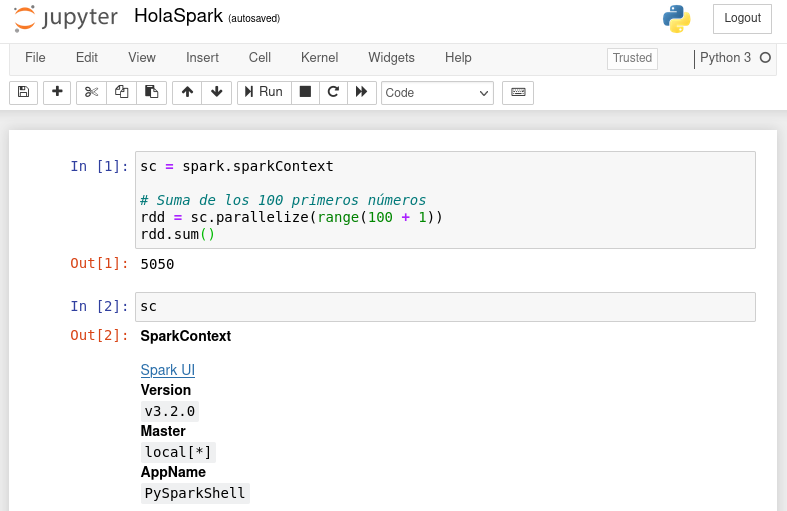
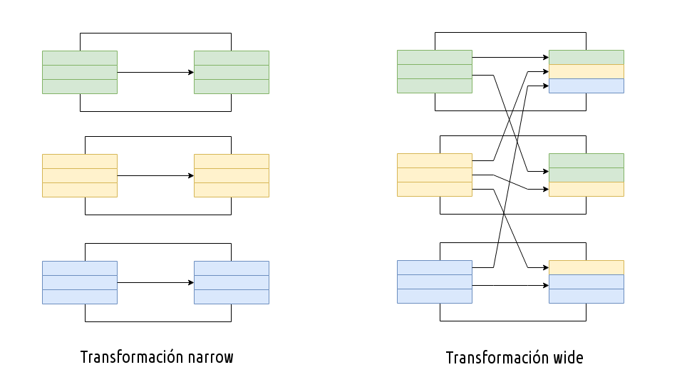
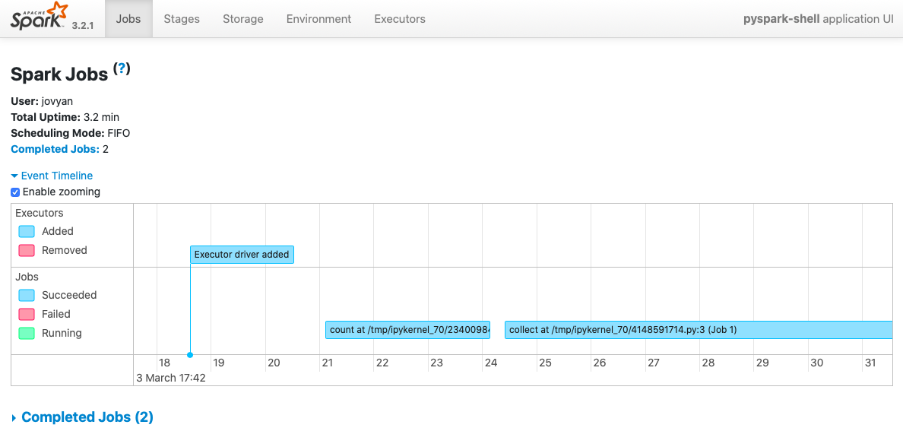

<!doctype html>
<html lang="es" class="no-js">
  <head>
    
      <meta charset="utf-8">
      <meta name="viewport" content="width=device-width,initial-scale=1">
      
      
      
        <link rel="canonical" href="https://aitor-medrano.github.io/bigdata2122/apuntes/spark01.html">
      
      <link rel="icon" href="../imagenes/favicon.png">
      <meta name="generator" content="mkdocs-1.2.3, mkdocs-material-8.2.1">
    
    
      
        <title>Spark - Inteligencia Artificial y Big Data</title>
      
    
    
      <link rel="stylesheet" href="../assets/stylesheets/main.e8d9bf0c.min.css">
      
        
        <link rel="stylesheet" href="../assets/stylesheets/palette.e6a45f82.min.css">
        
          
          
          <meta name="theme-color" content="#02a6f2">
        
      
    
    
    
      
        
        <link rel="preconnect" href="https://fonts.gstatic.com" crossorigin>
        <link rel="stylesheet" href="https://fonts.googleapis.com/css?family=Roboto:300,400,400i,700%7CRoboto+Mono&display=fallback">
        <style>:root{--md-text-font:"Roboto";--md-code-font:"Roboto Mono"}</style>
      
    
    
    <script>__md_scope=new URL("..",location),__md_get=(e,_=localStorage,t=__md_scope)=>JSON.parse(_.getItem(t.pathname+"."+e)),__md_set=(e,_,t=localStorage,a=__md_scope)=>{try{t.setItem(a.pathname+"."+e,JSON.stringify(_))}catch(e){}}</script>
    
      
  


  
  


  <script>function gtag(){dataLayer.push(arguments)}window.dataLayer=window.dataLayer||[],gtag("js",new Date),gtag("config","G-MV889H0W63"),document.addEventListener("DOMContentLoaded",function(){document.forms.search&&document.forms.search.query.addEventListener("blur",function(){this.value&&gtag("event","search",{search_term:this.value})}),"undefined"!=typeof location$&&location$.subscribe(function(e){gtag("config","G-MV889H0W63",{page_path:e.pathname})})})</script>
  <script async src="https://www.googletagmanager.com/gtag/js?id=G-MV889H0W63"></script>


    
    
  </head>
  
  
    
    
    
    
    
    <body dir="ltr" data-md-color-scheme="" data-md-color-primary="light-blue" data-md-color-accent="teal">
  
    
    
    <input class="md-toggle" data-md-toggle="drawer" type="checkbox" id="__drawer" autocomplete="off">
    <input class="md-toggle" data-md-toggle="search" type="checkbox" id="__search" autocomplete="off">
    <label class="md-overlay" for="__drawer"></label>
    <div data-md-component="skip">
      
        
        <a href="#spark" class="md-skip">
          Saltar a contenido
        </a>
      
    </div>
    <div data-md-component="announce">
      
    </div>
    
    
      

<header class="md-header" data-md-component="header">
  <nav class="md-header__inner md-grid" aria-label="Cabecera">
    <a href="../index.html" title="Inteligencia Artificial y Big Data" class="md-header__button md-logo" aria-label="Inteligencia Artificial y Big Data" data-md-component="logo">
      
  

    </a>
    <label class="md-header__button md-icon" for="__drawer">
      <svg xmlns="http://www.w3.org/2000/svg" viewBox="0 0 24 24"><path d="M3 6h18v2H3V6m0 5h18v2H3v-2m0 5h18v2H3v-2z"/></svg>
    </label>
    <div class="md-header__title" data-md-component="header-title">
      <div class="md-header__ellipsis">
        <div class="md-header__topic">
          <span class="md-ellipsis">
            Inteligencia Artificial y Big Data
          </span>
        </div>
        <div class="md-header__topic" data-md-component="header-topic">
          <span class="md-ellipsis">
            
              Spark
            
          </span>
        </div>
      </div>
    </div>
    
    
    
      <label class="md-header__button md-icon" for="__search">
        <svg xmlns="http://www.w3.org/2000/svg" viewBox="0 0 24 24"><path d="M9.5 3A6.5 6.5 0 0 1 16 9.5c0 1.61-.59 3.09-1.56 4.23l.27.27h.79l5 5-1.5 1.5-5-5v-.79l-.27-.27A6.516 6.516 0 0 1 9.5 16 6.5 6.5 0 0 1 3 9.5 6.5 6.5 0 0 1 9.5 3m0 2C7 5 5 7 5 9.5S7 14 9.5 14 14 12 14 9.5 12 5 9.5 5z"/></svg>
      </label>
      <div class="md-search" data-md-component="search" role="dialog">
  <label class="md-search__overlay" for="__search"></label>
  <div class="md-search__inner" role="search">
    <form class="md-search__form" name="search">
      <input type="text" class="md-search__input" name="query" aria-label="Búsqueda" placeholder="Búsqueda" autocapitalize="off" autocorrect="off" autocomplete="off" spellcheck="false" data-md-component="search-query" required>
      <label class="md-search__icon md-icon" for="__search">
        <svg xmlns="http://www.w3.org/2000/svg" viewBox="0 0 24 24"><path d="M9.5 3A6.5 6.5 0 0 1 16 9.5c0 1.61-.59 3.09-1.56 4.23l.27.27h.79l5 5-1.5 1.5-5-5v-.79l-.27-.27A6.516 6.516 0 0 1 9.5 16 6.5 6.5 0 0 1 3 9.5 6.5 6.5 0 0 1 9.5 3m0 2C7 5 5 7 5 9.5S7 14 9.5 14 14 12 14 9.5 12 5 9.5 5z"/></svg>
        <svg xmlns="http://www.w3.org/2000/svg" viewBox="0 0 24 24"><path d="M20 11v2H8l5.5 5.5-1.42 1.42L4.16 12l7.92-7.92L13.5 5.5 8 11h12z"/></svg>
      </label>
      <nav class="md-search__options" aria-label="Search">
        
        <button type="reset" class="md-search__icon md-icon" aria-label="Limpiar" tabindex="-1">
          <svg xmlns="http://www.w3.org/2000/svg" viewBox="0 0 24 24"><path d="M19 6.41 17.59 5 12 10.59 6.41 5 5 6.41 10.59 12 5 17.59 6.41 19 12 13.41 17.59 19 19 17.59 13.41 12 19 6.41z"/></svg>
        </button>
      </nav>
      
    </form>
    <div class="md-search__output">
      <div class="md-search__scrollwrap" data-md-scrollfix>
        <div class="md-search-result" data-md-component="search-result">
          <div class="md-search-result__meta">
            Inicializando búsqueda
          </div>
          <ol class="md-search-result__list"></ol>
        </div>
      </div>
    </div>
  </div>
</div>
    
    
  </nav>
  
</header>
    
    <div class="md-container" data-md-component="container">
      
      
        
          
        
      
      <main class="md-main" data-md-component="main">
        <div class="md-main__inner md-grid">
          
            
              
              <div class="md-sidebar md-sidebar--primary" data-md-component="sidebar" data-md-type="navigation" >
                <div class="md-sidebar__scrollwrap">
                  <div class="md-sidebar__inner">
                    


<nav class="md-nav md-nav--primary" aria-label="Navegación" data-md-level="0">
  <label class="md-nav__title" for="__drawer">
    <a href="../index.html" title="Inteligencia Artificial y Big Data" class="md-nav__button md-logo" aria-label="Inteligencia Artificial y Big Data" data-md-component="logo">
      
  

    </a>
    Inteligencia Artificial y Big Data
  </label>
  
  <ul class="md-nav__list" data-md-scrollfix>
    
      
      
      

  
  
  
    <li class="md-nav__item">
      <a href="../index.html" class="md-nav__link">
        Inicio
      </a>
    </li>
  

    
      
      
      

  
  
  
    
    <li class="md-nav__item md-nav__item--nested">
      
      
        <input class="md-nav__toggle md-toggle" data-md-toggle="__nav_2" data-md-state="indeterminate" type="checkbox" id="__nav_2" checked>
      
      
      
      
        <label class="md-nav__link" for="__nav_2">
          Arquitecturas Big Data
          <span class="md-nav__icon md-icon"></span>
        </label>
      
      <nav class="md-nav" aria-label="Arquitecturas Big Data" data-md-level="1">
        <label class="md-nav__title" for="__nav_2">
          <span class="md-nav__icon md-icon"></span>
          Arquitecturas Big Data
        </label>
        <ul class="md-nav__list" data-md-scrollfix>
          
            
              
  
  
  
    <li class="md-nav__item">
      <a href="nube01.html" class="md-nav__link">
        1.- Cloud Computing
      </a>
    </li>
  

            
          
            
              
  
  
  
    <li class="md-nav__item">
      <a href="nube02aws.html" class="md-nav__link">
        2.- AWS
      </a>
    </li>
  

            
          
            
              
  
  
  
    <li class="md-nav__item">
      <a href="nube03computacion.html" class="md-nav__link">
        3.- Computación
      </a>
    </li>
  

            
          
            
              
  
  
  
    <li class="md-nav__item">
      <a href="nube04almacenamiento.html" class="md-nav__link">
        4.- Almacenamiento
      </a>
    </li>
  

            
          
            
              
  
  
  
    <li class="md-nav__item">
      <a href="nube05datos.html" class="md-nav__link">
        5.- Datos
      </a>
    </li>
  

            
          
            
              
  
  
  
    <li class="md-nav__item">
      <a href="arquitecturas01.html" class="md-nav__link">
        6.- Arquitecturas
      </a>
    </li>
  

            
          
        </ul>
      </nav>
    </li>
  

    
      
      
      

  
  
  
    
    <li class="md-nav__item md-nav__item--nested">
      
      
        <input class="md-nav__toggle md-toggle" data-md-toggle="__nav_3" data-md-state="indeterminate" type="checkbox" id="__nav_3" checked>
      
      
      
      
        <label class="md-nav__link" for="__nav_3">
          Ingesta de Datos
          <span class="md-nav__icon md-icon"></span>
        </label>
      
      <nav class="md-nav" aria-label="Ingesta de Datos" data-md-level="1">
        <label class="md-nav__title" for="__nav_3">
          <span class="md-nav__icon md-icon"></span>
          Ingesta de Datos
        </label>
        <ul class="md-nav__list" data-md-scrollfix>
          
            
              
  
  
  
    <li class="md-nav__item">
      <a href="ingesta01.html" class="md-nav__link">
        1.- ETL
      </a>
    </li>
  

            
          
            
              
  
  
  
    <li class="md-nav__item">
      <a href="ingesta02pentaho.html" class="md-nav__link">
        2.- Pentaho DI
      </a>
    </li>
  

            
          
            
              
  
  
  
    <li class="md-nav__item">
      <a href="ingesta03nifi1.html" class="md-nav__link">
        3.- Nifi I
      </a>
    </li>
  

            
          
            
              
  
  
  
    <li class="md-nav__item">
      <a href="ingesta04nifi2.html" class="md-nav__link">
        4.- Nifi II
      </a>
    </li>
  

            
          
            
              
  
  
  
    <li class="md-nav__item">
      <a href="ingesta05python.html" class="md-nav__link">
        5.- Python y AWS
      </a>
    </li>
  

            
          
        </ul>
      </nav>
    </li>
  

    
      
      
      

  
  
  
    
    <li class="md-nav__item md-nav__item--nested">
      
      
        <input class="md-nav__toggle md-toggle" data-md-toggle="__nav_4" data-md-state="indeterminate" type="checkbox" id="__nav_4" checked>
      
      
      
      
        <label class="md-nav__link" for="__nav_4">
          Big Data Aplicado
          <span class="md-nav__icon md-icon"></span>
        </label>
      
      <nav class="md-nav" aria-label="Big Data Aplicado" data-md-level="1">
        <label class="md-nav__title" for="__nav_4">
          <span class="md-nav__icon md-icon"></span>
          Big Data Aplicado
        </label>
        <ul class="md-nav__list" data-md-scrollfix>
          
            
              
  
  
  
    <li class="md-nav__item">
      <a href="bdaplicado01hadoop.html" class="md-nav__link">
        1.- Hadoop
      </a>
    </li>
  

            
          
            
              
  
  
  
    <li class="md-nav__item">
      <a href="bdaplicado02hdfs.html" class="md-nav__link">
        2.- HDFS
      </a>
    </li>
  

            
          
        </ul>
      </nav>
    </li>
  

    
  </ul>
</nav>
                  </div>
                </div>
              </div>
            
            
              
              <div class="md-sidebar md-sidebar--secondary" data-md-component="sidebar" data-md-type="toc" >
                <div class="md-sidebar__scrollwrap">
                  <div class="md-sidebar__inner">
                    

<nav class="md-nav md-nav--secondary" aria-label="Tabla de contenidos">
  
  
  
    
  
  
    <label class="md-nav__title" for="__toc">
      <span class="md-nav__icon md-icon"></span>
      Tabla de contenidos
    </label>
    <ul class="md-nav__list" data-md-component="toc" data-md-scrollfix>
      
        <li class="md-nav__item">
  <a href="#introduccion" class="md-nav__link">
    Introducción
  </a>
  
    <nav class="md-nav" aria-label="Introducción">
      <ul class="md-nav__list">
        
          <li class="md-nav__item">
  <a href="#spark-vs-hadoop" class="md-nav__link">
    Spark vs Hadoop
  </a>
  
</li>
        
          <li class="md-nav__item">
  <a href="#ecosistema" class="md-nav__link">
    Ecosistema
  </a>
  
</li>
        
      </ul>
    </nav>
  
</li>
      
        <li class="md-nav__item">
  <a href="#puesta-en-marcha" class="md-nav__link">
    Puesta en Marcha
  </a>
  
    <nav class="md-nav" aria-label="Puesta en Marcha">
      <ul class="md-nav__list">
        
          <li class="md-nav__item">
  <a href="#sparkcontext-vs-sparksession" class="md-nav__link">
    SparkContext vs SparkSession
  </a>
  
</li>
        
          <li class="md-nav__item">
  <a href="#hola-spark" class="md-nav__link">
    Hola Spark
  </a>
  
</li>
        
      </ul>
    </nav>
  
</li>
      
        <li class="md-nav__item">
  <a href="#dataframe" class="md-nav__link">
    DataFrame
  </a>
  
</li>
      
        <li class="md-nav__item">
  <a href="#rdd" class="md-nav__link">
    RDD
  </a>
  
</li>
      
        <li class="md-nav__item">
  <a href="#operaciones-basicas" class="md-nav__link">
    Operaciones básicas
  </a>
  
    <nav class="md-nav" aria-label="Operaciones básicas">
      <ul class="md-nav__list">
        
          <li class="md-nav__item">
  <a href="#parallelize" class="md-nav__link">
    Parallelize
  </a>
  
</li>
        
          <li class="md-nav__item">
  <a href="#take" class="md-nav__link">
    Take
  </a>
  
</li>
        
          <li class="md-nav__item">
  <a href="#collect" class="md-nav__link">
    Collect
  </a>
  
</li>
        
      </ul>
    </nav>
  
</li>
      
        <li class="md-nav__item">
  <a href="#transformaciones" class="md-nav__link">
    Transformaciones
  </a>
  
</li>
      
        <li class="md-nav__item">
  <a href="#transformaciones-narrow" class="md-nav__link">
    Transformaciones Narrow
  </a>
  
    <nav class="md-nav" aria-label="Transformaciones Narrow">
      <ul class="md-nav__list">
        
          <li class="md-nav__item">
  <a href="#map" class="md-nav__link">
    Map
  </a>
  
</li>
        
          <li class="md-nav__item">
  <a href="#flatmap" class="md-nav__link">
    Flatmap
  </a>
  
</li>
        
          <li class="md-nav__item">
  <a href="#filter" class="md-nav__link">
    Filter
  </a>
  
</li>
        
          <li class="md-nav__item">
  <a href="#union" class="md-nav__link">
    Union
  </a>
  
</li>
        
          <li class="md-nav__item">
  <a href="#intersection" class="md-nav__link">
    Intersection
  </a>
  
</li>
        
          <li class="md-nav__item">
  <a href="#distinct" class="md-nav__link">
    Distinct
  </a>
  
</li>
        
      </ul>
    </nav>
  
</li>
      
        <li class="md-nav__item">
  <a href="#transformaciones-wide" class="md-nav__link">
    Transformaciones Wide
  </a>
  
    <nav class="md-nav" aria-label="Transformaciones Wide">
      <ul class="md-nav__list">
        
          <li class="md-nav__item">
  <a href="#groupbykey" class="md-nav__link">
    GroupByKey
  </a>
  
</li>
        
          <li class="md-nav__item">
  <a href="#reducebykey" class="md-nav__link">
    ReduceByKey
  </a>
  
</li>
        
          <li class="md-nav__item">
  <a href="#sortbykey" class="md-nav__link">
    SortByKey
  </a>
  
</li>
        
          <li class="md-nav__item">
  <a href="#sortby" class="md-nav__link">
    SortBy
  </a>
  
</li>
        
      </ul>
    </nav>
  
</li>
      
        <li class="md-nav__item">
  <a href="#particiones" class="md-nav__link">
    Particiones
  </a>
  
    <nav class="md-nav" aria-label="Particiones">
      <ul class="md-nav__list">
        
          <li class="md-nav__item">
  <a href="#mappartitions" class="md-nav__link">
    MapPartitions
  </a>
  
</li>
        
          <li class="md-nav__item">
  <a href="#mappartitionswithindex" class="md-nav__link">
    mapPartitionsWithIndex
  </a>
  
</li>
        
          <li class="md-nav__item">
  <a href="#modificando-las-particiones" class="md-nav__link">
    Modificando las particiones
  </a>
  
</li>
        
      </ul>
    </nav>
  
</li>
      
        <li class="md-nav__item">
  <a href="#acciones" class="md-nav__link">
    Acciones
  </a>
  
</li>
      
        <li class="md-nav__item">
  <a href="#spark-ui" class="md-nav__link">
    Spark UI
  </a>
  
</li>
      
        <li class="md-nav__item">
  <a href="#actividades" class="md-nav__link">
    Actividades
  </a>
  
</li>
      
        <li class="md-nav__item">
  <a href="#referencias" class="md-nav__link">
    Referencias
  </a>
  
</li>
      
    </ul>
  
</nav>
                  </div>
                </div>
              </div>
            
          
          <div class="md-content" data-md-component="content">
            <article class="md-content__inner md-typeset">
              
                


<h1 id="spark">Spark<a class="headerlink" href="#spark" title="Permanent link">&para;</a></h1>
<p>La analítica de datos es el proceso de inspeccionar, limpiar, transformar y modelar los datos con el objetivo de descubrir información útil, obtener conclusiones sobre los datos y ayudar en la toma de decisiones.</p>
<p>Para ello, el uso de <em>Spark</em> de la mano de <em>Python</em>, <em>NumPy</em> y <em>Pandas</em> como interfaz de la analítica es clave en el día a día de un científico/ingeniero de datos.</p>
<h2 id="introduccion">Introducción<a class="headerlink" href="#introduccion" title="Permanent link">&para;</a></h2>
<figure style="float: right;">
    
    <figcaption>Logo de Apache Spark</figcaption>
</figure>

<p><a href="https://spark.apache.org"><em>Spark</em></a> es un framework de computación distribuido en paralelo similar a <em>Hadoop-MapReduce</em> (así pues, <em>Spark</em> no es un lenguaje de programación), pero que en vez de almacenar los datos en un sistema de ficheros distribuidos o utilizar un sistema de gestión de recursos, lo hace en memoria. El hecho de almacenar en memoria los cálculos intermedios implica que sea mucho más eficiente que <em>Hadoop MapReduce</em>.</p>
<p>En el caso de tener la necesidad de almacenar los datos o gestionar los recursos, se apoya en sistemas ya existentes como <em>HDFS</em>, <em>YARN</em> o <em>Apache Mesos</em>. Por lo tanto, <em>Hadoop</em> y <em>Spark</em> son sistemas complementarios.</p>
<p>El diseño de <em>Spark</em> se basa principalmente en cuatro características:</p>
<ul>
<li>Velocidad: enfocado al uso en un cluster de <em>commodity hardware</em> con una gestión eficiente de multihilo y procesamiento paralelo. Spark construye sus consultas de computación mediante un grafo dirigido acíclico (DAG) y utiliza un planificador para descomponer el grafo en tareas que se ejecutan en paralelo mediante los nodos de los clusters. Finalmente, utiliza un motor de ejecución (<em>Tungsten</em>) que genera código compacto para optimizar la ejecución. Todo ello teniendo en cuenta que los resultados intermedios se almacenan en memoria.</li>
<li>Facilidad de uso: Spark ofrece varias capas de abstracción sobre los datos, como son los RDD, DataFrames y Dataset. Al ofrecer un conjunto de transformaciones y acciones como operaciones de su API, Spark facilita el desarrollo de aplicaciones big data.</li>
<li>Modularidad: soporte para todo tipo de cargas mediante cualquiera de los lenguajes de programación soportados: Scala, Java, Python, SQL y R, así como los módulos de <em>Spark SQL</em> para consultas interactivas, <em>Spark Structured Streaming</em> para procesamiento de datos en <em>streaming</em>, <em>Spark MLlib</em> para <em>machine learning</em> y GraphX. De esta manera, mediante una única aplicación Spark se puede hacer todo sin necesidad de utilizar APIs separadas.</li>
<li>Extensibilidad: Al centrarse unicamente en el procesamiento, la gestión de los datos se puede realizar a partir de Hadoop, Cassandra, HBase, MongoDB, Hive o cualquier SGBD relacional, haciendo todo en memoria. Además, se puede extender el API para utilizar otras fuentes de datos, como Apache Kafka, Amazon S3 o Azure Storage.</li>
</ul>
<h3 id="spark-vs-hadoop">Spark vs Hadoop<a class="headerlink" href="#spark-vs-hadoop" title="Permanent link">&para;</a></h3>
<p>La principal diferencia es que la computación se realiza en memoria, lo que puede implicar un mejora de hasta 100 veces mejor rendimiento. Para ello, se realiza una evaluación perezosa de las operaciones, de manera, que hasta que no se realiza una operación, los datos realmente no se cargan.</p>
<p>Para solucionar los problemas asociados a <em>MapReduce</em>, Spark crea un espacio de memoria RAM compartida entre los ordenadores del clúster. Este permite que los NodeManager/WorkerNode compartan variables (y su estado), eliminando la necesidad de escribir los resultados intermedios en disco. Esta zona de memoria compartida se traduce en el uso de RDD, <em>DataFrames</em> y <em>DataSets</em>, permitiendo realizar procesamiento en memoria a lo largo de un clúster con tolerancia a fallos.</p>
<p><a href="https://www.geeksforgeeks.org/difference-between-hadoop-and-apache-spark/?ref=lbp">https://www.geeksforgeeks.org/difference-between-hadoop-and-apache-spark/?ref=lbp</a></p>
<h3 id="ecosistema">Ecosistema<a class="headerlink" href="#ecosistema" title="Permanent link">&para;</a></h3>
<p>El elemento principal es <strong><em>Spark core</em></strong>, el núcleo que ofrece un entorno NoSQL idónea para el análisis exploratorio e interactivo de los datos. Spark se puede ejecutar en <em>batch</em> o en modo interactivo y tiene soporte para Python. Independientemente del lenguaje utilizado (ya sea Python, Java, Scala, R o SQL) el código de desplega entre todos los <em>NodeManagers/WorkerNode</em> a lo largo del clúster.</p>
<p>Además, contiene otros 4 grandes componentes:</p>
<figure style="align: center;">
    
    <figcaption>Componentes de Spark</figcaption>
</figure>

<ol>
<li><strong><em>Spark Streaming</em></strong> es una herramienta para el análisis en tiempo real.</li>
<li>
<p><strong><em>Spark SQL</em></strong> ofrece un interfaz SQL para trabajar con Spark, permitiendo la lectura de datos tanto de una tabla de cualquier base de datos relaciones como de ficheros con formatos estructurados (CSV, texto, JSON, Avro, ORC, Parquet, etc...) y construir tablas permanentes o temporales en Spark. Tras la lectura, permite combinar sentencias SQL para trabajar con los datos y cargar los resultados en un <em>DataFrame de Spark</em>.</p>
<p>Por ejemplo, con este fragmento leemos un fichero JSON desde S3, creamos una tabla temporal y mediante una consulta SQL cargamos los datos en un DataFrame de Spark:</p>
<div class="highlight"><pre><span></span><code><span class="linenos" data-linenos="1 "></span><span class="o">//</span> <span class="n">In</span> <span class="n">Scala</span>
<span class="linenos" data-linenos="2 "></span><span class="o">//</span> <span class="n">Read</span> <span class="n">data</span> <span class="n">off</span> <span class="n">Amazon</span> <span class="n">S3</span> <span class="n">bucket</span> <span class="n">into</span> <span class="n">a</span> <span class="n">Spark</span> <span class="n">DataFrame</span>
<span class="linenos" data-linenos="3 "></span><span class="n">spark</span><span class="o">.</span><span class="n">read</span><span class="o">.</span><span class="n">json</span><span class="p">(</span><span class="s2">&quot;s3://apache_spark/data/committers.json&quot;</span><span class="p">)</span>
<span class="linenos" data-linenos="4 "></span><span class="o">.</span><span class="n">createOrReplaceTempView</span><span class="p">(</span><span class="s2">&quot;committers&quot;</span><span class="p">)</span>
<span class="linenos" data-linenos="5 "></span><span class="o">//</span> <span class="n">Issue</span> <span class="n">a</span> <span class="n">SQL</span> <span class="n">query</span> <span class="ow">and</span> <span class="k">return</span> <span class="n">the</span> <span class="n">result</span> <span class="k">as</span> <span class="n">a</span> <span class="n">Spark</span> <span class="n">DataFrame</span>
<span class="linenos" data-linenos="6 "></span><span class="n">val</span> <span class="n">results</span> <span class="o">=</span> <span class="n">spark</span><span class="o">.</span><span class="n">sql</span><span class="p">(</span><span class="s2">&quot;&quot;&quot;SELECT name, org, module, release, num_commits</span>
<span class="linenos" data-linenos="7 "></span><span class="s2">    FROM committers WHERE module = &#39;mllib&#39; AND num_commits &gt; 10</span>
<span class="linenos" data-linenos="8 "></span><span class="s2">    ORDER BY num_commits DESC&quot;&quot;&quot;</span><span class="p">)</span>
</code></pre></div>
</li>
<li>
<p><strong><em>Spark ML</em></strong> es una librería para utilizar <em>machine learning</em> dentro de Spark.</p>
</li>
<li><strong><em>GraphX</em></strong> es una base de datos de grafos. En este curso no vamos a entrar en detalle en este módulo.</li>
</ol>
<p>Además, la comunidad de <em>Spark</em> dispone de un gran número de conectores para diferentes fuentes de datos, herramientas de monitorización, etc...</p>
<figure style="align: center;">
    
    <figcaption>Ecosistema de Spark</figcaption>
</figure>

<h2 id="puesta-en-marcha">Puesta en Marcha<a class="headerlink" href="#puesta-en-marcha" title="Permanent link">&para;</a></h2>
<p>En nuestra máquina virtual, únicamente necesitamos ejecutar el comando <code>pyspark</code> el cual arrancará directamente un cuaderno <em>Jupyter</em>:</p>
<p>FIXME: foto de pyspark</p>
<p>Otra posibilidad es utilizar alguna de las imágenes <em>Docker</em> disponibles que facilitan su uso. En nuestro caso, recomendamos las imágenes disponibles en <a href="https://github.com/jupyter/docker-stacks">https://github.com/jupyter/docker-stacks</a>.</p>
<p>Para lanzar la imagen de <em>PySpark</em> con cuadernos <em>Jupyter</em> utilizaremos:</p>
<div class="highlight"><pre><span></span><code><span class="linenos" data-linenos="1 "></span>docker run -d -p <span class="m">8888</span>:8888 -p <span class="m">4040</span>:4040 -p <span class="m">4041</span>:4041 jupyter/pyspark-notebook
</code></pre></div>
<h3 id="sparkcontext-vs-sparksession">SparkContext vs SparkSession<a class="headerlink" href="#sparkcontext-vs-sparksession" title="Permanent link">&para;</a></h3>
<p><em>Spark SparkContext</em> es el punto de entrada a <em>Spark</em> desde las versiones 1.x y se utiliza para crear de forma programativa RDD, acumuladores y variables <em>broadcast</em> en el clúster. Desde Spark 2.0, la mayoría de funcionalidades (métodos) disponibles en <em>SparkContext</em> también los están en <em>SparkSession</em>. Su objeto <code>sc</code> está disponible en el <em>spark-shell</em> y se puede crear de forma programativa mediante la clase <code>SparkContext</code>.</p>
<p><em>SparkSession</em> se introdujo en la versión 2.0 y es el punto de entrada para crear <em>RDD</em>, <em>DataFrames</em> y <em>DataSets</em>. El objeto <code>spark</code> se encuentra disponible por defecto en el <em>spark-shell</em> y se puede crear de forma programativa mediante el patrón builder de <code>SparkSession</code>.</p>
<h3 id="hola-spark">Hola Spark<a class="headerlink" href="#hola-spark" title="Permanent link">&para;</a></h3>
<p>Lo primero que debemos hacer siempre es conectarnos al contexto de Spark, el cual le indica a Spark como acceder al clúster. Si utilizamos la imagen de <em>Docker</em>, debemos obtener siempre el contexto a partir de la clase <code>SparkSession</code>:</p>
<div class="highlight"><pre><span></span><code><span class="linenos" data-linenos="1 "></span><span class="kn">from</span> <span class="nn">pyspark.sql</span> <span class="kn">import</span> <span class="n">SparkSession</span>
<span class="linenos" data-linenos="2 "></span>
<span class="linenos" data-linenos="3 "></span><span class="n">spark</span> <span class="o">=</span> <span class="n">SparkSession</span><span class="o">.</span><span class="n">builder</span><span class="o">.</span><span class="n">getOrCreate</span><span class="p">()</span> <span class="c1"># SparkSession de forma programativa</span>
<span class="linenos" data-linenos="4 "></span><span class="n">sc</span> <span class="o">=</span> <span class="n">spark</span><span class="o">.</span><span class="n">sparkContext</span>                    <span class="c1"># SparkContext a partir de la sesión</span>
<span class="linenos" data-linenos="5 "></span>
<span class="linenos" data-linenos="6 "></span><span class="c1"># Suma de los 100 primeros números</span>
<span class="linenos" data-linenos="7 "></span><span class="n">rdd</span> <span class="o">=</span> <span class="n">sc</span><span class="o">.</span><span class="n">parallelize</span><span class="p">(</span><span class="nb">range</span><span class="p">(</span><span class="mi">100</span> <span class="o">+</span> <span class="mi">1</span><span class="p">))</span>
<span class="linenos" data-linenos="8 "></span><span class="n">rdd</span><span class="o">.</span><span class="n">sum</span><span class="p">()</span>
</code></pre></div>
<p>En cambio, si utilizamos la instalación de <em>PySpark</em> que tenemos en la máquina virtual, directamente podemos acceder a la instancia de <code>SparkSession</code> a través del objeto global <code>spark</code>:</p>
<div class="highlight"><pre><span></span><code><span class="linenos" data-linenos="1 "></span><span class="n">sc</span> <span class="o">=</span> <span class="n">spark</span><span class="o">.</span><span class="n">sparkContext</span>     <span class="c1"># spark es una instancia de la clase SparkSession</span>
<span class="linenos" data-linenos="2 "></span>
<span class="linenos" data-linenos="3 "></span><span class="n">rdd</span> <span class="o">=</span> <span class="n">sc</span><span class="o">.</span><span class="n">parallelize</span><span class="p">(</span><span class="nb">range</span><span class="p">(</span><span class="mi">100</span> <span class="o">+</span> <span class="mi">1</span><span class="p">))</span>
<span class="linenos" data-linenos="4 "></span><span class="n">rdd</span><span class="o">.</span><span class="n">sum</span><span class="p">()</span>
</code></pre></div>
<p>En ambos casos, si mostramos el contenido del contexto obtendremos algo similar a:</p>
<div class="highlight"><pre><span></span><code><span class="linenos" data-linenos="1 "></span>Version
<span class="linenos" data-linenos="2 "></span>    v3.2.0
<span class="linenos" data-linenos="3 "></span>Master
<span class="linenos" data-linenos="4 "></span>    local[*]
<span class="linenos" data-linenos="5 "></span>AppName
<span class="linenos" data-linenos="6 "></span>    PySparkShell
</code></pre></div>
<p>A continuación podemos ver el resultado completo en su ejecución dentro de un cuaderno Jupyter:</p>
<figure style="align: center;">
    
    <figcaption>Hola Spark</figcaption>
</figure>

<p><a href="https://spark.apache.org/docs/latest/api/python/getting_started/quickstart_df.html">https://spark.apache.org/docs/latest/api/python/getting_started/quickstart_df.html</a></p>
<p><a href="https://www.sicara.ai/blog/2017-05-02-get-started-pyspark-jupyter-notebook-3-minutes">https://www.sicara.ai/blog/2017-05-02-get-started-pyspark-jupyter-notebook-3-minutes</a></p>
<p><a href="https://www.datamechanics.co/blog-post/tutorial-running-pyspark-inside-docker-containers">https://www.datamechanics.co/blog-post/tutorial-running-pyspark-inside-docker-containers</a></p>
<div class="admonition warning">
<p class="admonition-title">¿RDD obsoleto?</p>
<p>Antes de Spark 2.0, el principal interfaz para programar en Spark eran los RDD. Tras la versión 2.0, fueron sustituidos por los <em>Dataset</em>, que son RDD fuertemente tipados que además están optimizados a bajo nivel.
El interfaz RDD todavía tiene soporte, sin embargo, se recomienda el uso de los Dataset por su mejor rendimiento.
A lo largo de estas sesiones iremos combinando ambos interfaces para conocer las similitudes y diferencias.</p>
</div>
<h2 id="dataframe">DataFrame<a class="headerlink" href="#dataframe" title="Permanent link">&para;</a></h2>
<p>Como acabamos de comentar, la principal abstracción de los datos en Spark es el <strong><em>Dataset</em></strong>. Se pueden crear desde las fuentes de entrada de <em>Hadoop</em> (como ficheros HDFS) o mediante transformaciones de otros <em>Datasets</em>.
Dado el cariz de <em>Python</em>, no necesitamos que los <em>Dataset</em> estén fuertemente tipados, por eso, todos los <em>Dataset</em> que usemos serán <code>Dataset[Row]</code> (si trabajásemos mediante <em>Java</em> o <em>Scala</em> sí deberíamos indicar el tipo de sus datos), y por consistencia con el concepto de Pandas y R, los llamaremos <strong><em>DataFrame</em></strong>.</p>
<p>Por ejemplo, veamos cómo podemos crear un <em>DataFrame</em> a partir de un fichero de texto:</p>
<div class="highlight"><pre><span></span><code><span class="linenos" data-linenos=" 1 "></span><span class="kn">from</span> <span class="nn">pyspark.sql</span> <span class="kn">import</span> <span class="n">SparkSession</span>
<span class="linenos" data-linenos=" 2 "></span>
<span class="linenos" data-linenos=" 3 "></span><span class="n">spark</span> <span class="o">=</span> <span class="n">SparkSession</span><span class="o">.</span><span class="n">builder</span><span class="o">.</span><span class="n">getOrCreate</span><span class="p">()</span> 
<span class="linenos" data-linenos=" 4 "></span>
<span class="linenos" data-linenos=" 5 "></span><span class="n">quijoteTxt</span> <span class="o">=</span> <span class="n">spark</span><span class="o">.</span><span class="n">read</span><span class="o">.</span><span class="n">text</span><span class="p">(</span><span class="s2">&quot;el_quijote.txt&quot;</span><span class="p">)</span>
<span class="linenos" data-linenos=" 6 "></span><span class="n">quijoteTxt</span><span class="o">.</span><span class="n">count</span><span class="p">()</span>  <span class="c1"># número de filas del DataFrame - 2186</span>
<span class="linenos" data-linenos=" 7 "></span><span class="n">quijoteTxt</span><span class="o">.</span><span class="n">first</span><span class="p">()</span>  <span class="c1"># primera fila - Row(value=&#39;DON QUIJOTE DE LA MANCHA&#39;)</span>
<span class="linenos" data-linenos=" 8 "></span><span class="c1"># Transformamos un DataFrame en otro nuevo</span>
<span class="linenos" data-linenos=" 9 "></span><span class="n">lineasConQuijote</span> <span class="o">=</span> <span class="n">quijoteTxt</span><span class="o">.</span><span class="n">filter</span><span class="p">(</span><span class="n">quijoteTxt</span><span class="o">.</span><span class="n">value</span><span class="o">.</span><span class="n">contains</span><span class="p">(</span><span class="s2">&quot;Quijote&quot;</span><span class="p">))</span>  <span class="c1"># DataFrame con las líneas que contiene la palabra Quijote</span>
<span class="linenos" data-linenos="10 "></span><span class="n">lineasConQuijote</span><span class="o">.</span><span class="n">count</span><span class="p">()</span>  <span class="c1"># cantidad de líneas con la palabra Quijote - 584</span>
<span class="linenos" data-linenos="11 "></span><span class="c1"># Las transformaciones se pueden encadenar</span>
<span class="linenos" data-linenos="12 "></span><span class="n">quijoteTxt</span><span class="o">.</span><span class="n">filter</span><span class="p">(</span><span class="n">quijoteTxt</span><span class="o">.</span><span class="n">value</span><span class="o">.</span><span class="n">contains</span><span class="p">(</span><span class="s2">&quot;Quijote&quot;</span><span class="p">))</span><span class="o">.</span><span class="n">count</span><span class="p">()</span>     <span class="c1"># idem - 584</span>
</code></pre></div>
<h2 id="rdd">RDD<a class="headerlink" href="#rdd" title="Permanent link">&para;</a></h2>
<p>Un <a href="https://spark.apache.org/docs/latest/rdd-programming-guide.html#resilient-distributed-datasets-rdds">RDD</a> (<em>Resilient Distributed Datasets</em>) es una estructura de datos que abstrae los datos para su procesamiento distribuido.</p>
<p>Antes de Spark 2.0, era el interfaz principal para interactuar con los datos.</p>
<p>En Spark</p>
<p>Inmutable
Distribuido
Tolerante a fallos
En memoria</p>
<p>is a fault-tolerant collection of elements that can be operated on in parallel. There are two ways to create RDDs: parallelizing an existing collection in your driver program, or referencing a dataset in an external storage system, such as a shared filesystem, HDFS, HBase, or any data source offering a Hadoop InputFormat.</p>
<p>Una transformación es una operación perezosa que devuelve otro RDD como un mapa, filtro, <em>flatmap</em>, <em>join</em>, etc...</p>
<p>Spark no tiene su propio sistema de almacenamiento</p>
<h2 id="operaciones-basicas">Operaciones básicas<a class="headerlink" href="#operaciones-basicas" title="Permanent link">&para;</a></h2>
<h3 id="parallelize">Parallelize<a class="headerlink" href="#parallelize" title="Permanent link">&para;</a></h3>
<p>Podemos crear RDD directamente desde aquí sin necesidad de leer de fichero, para ello vamos a usar parallelize, básicamente lo que estamos haciendo es una colección de elementos distribuida en nuestros clusters, entonces si por ejemplo tenemos una lista,normal, una vez le hagamos el parallelize, pasara a estar distribuida por nuestro sistema. mas adelante veremos que podemos elegir el numero de particiones que le queremos dar</p>
<div class="highlight"><pre><span></span><code><span class="linenos" data-linenos="1 "></span><span class="n">miRDD</span> <span class="o">=</span> <span class="n">sc</span><span class="o">.</span><span class="n">parallelize</span><span class="p">([</span><span class="mi">1</span><span class="p">,</span><span class="mi">2</span><span class="p">,</span><span class="mi">3</span><span class="p">,</span><span class="mi">4</span><span class="p">,</span><span class="mi">5</span><span class="p">,</span><span class="mi">6</span><span class="p">,</span><span class="mi">7</span><span class="p">,</span><span class="mi">8</span><span class="p">,</span><span class="mi">9</span><span class="p">])</span>
<span class="linenos" data-linenos="2 "></span>
<span class="linenos" data-linenos="3 "></span><span class="n">lista</span>  <span class="o">=</span> <span class="p">[</span><span class="s1">&#39;Hola&#39;</span><span class="p">,</span> <span class="s1">&#39;Adiós&#39;</span><span class="p">,</span> <span class="s1">&#39;Hasta luego&#39;</span><span class="p">]</span>
<span class="linenos" data-linenos="4 "></span><span class="n">listaRDD</span> <span class="o">=</span> <span class="n">sc</span><span class="o">.</span><span class="n">parallelize</span><span class="p">(</span><span class="n">lista</span><span class="p">)</span> <span class="c1"># Creamos un RDD a partir de una lista</span>
<span class="linenos" data-linenos="5 "></span><span class="n">listaRDD4</span> <span class="o">=</span> <span class="n">sc</span><span class="o">.</span><span class="n">parallelize</span><span class="p">(</span><span class="n">lista</span><span class="p">,</span><span class="mi">4</span><span class="p">)</span> <span class="c1"># Creamos un RDD con 4 particiones</span>
</code></pre></div>
<h3 id="take">Take<a class="headerlink" href="#take" title="Permanent link">&para;</a></h3>
<h3 id="collect">Collect<a class="headerlink" href="#collect" title="Permanent link">&para;</a></h3>
<p>Un fallo muy posible a la hora de mostrar los datos de un RDD es utilizar <code>rdd.foreach(print)</code> o <code>rdd.map(print)</code>.</p>
<p>En una única máquina, esta operación generaría la salida esperada mostrando todos los elementos del RDD. Sin embargo, al trabajar en un clúster, la salida a <em>stdout</em> la realizarían los diferentes nodos y no el nodo principal.</p>
<p>Así pues, para mostrar todos los elementos de un <em>RDD</em>/<em>DataFrame</em>/<em>Dataset</em> hemos de emplear el método <a href="https://spark.apache.org/docs/3.1.1/api/python/reference/api/pyspark.RDD.collect.html">collect</a>, el cual primero mostrará los RDD del nodo principal (<em>driver node</em>), y luego para cada nodo del cluster mostrará sus datos.</p>
<div class="highlight"><pre><span></span><code><span class="linenos" data-linenos="1 "></span><span class="n">rdd</span><span class="o">.</span><span class="n">collect</span><span class="p">()</span>
</code></pre></div>
<div class="admonition caution">
<p class="admonition-title">Out of memory</p>
<p>Hay que tener mucho cuidado, ya que nos podemos quedar facilmente sin memoria, ya que <code>collect</code> se trae todos los datos a un único nodo, el que ésta ejecutando el código (<em>driver</em>).</p>
</div>
<p>Si sólo necesitamos mostrar unos pocos elementos, un enfoque más seguro es utilizar <code>take</code>:</p>
<div class="highlight"><pre><span></span><code><span class="linenos" data-linenos="1 "></span><span class="n">rdd</span><span class="o">.</span><span class="n">take</span><span class="p">(</span><span class="mi">100</span><span class="p">)</span><span class="o">.</span><span class="n">foreach</span><span class="p">(</span><span class="n">println</span><span class="p">)</span>
</code></pre></div>
<p>FIXME: <a href="https://sparkbyexamples.com/spark/spark-dataframe-collect/">https://sparkbyexamples.com/spark/spark-dataframe-collect/</a></p>
<h2 id="transformaciones">Transformaciones<a class="headerlink" href="#transformaciones" title="Permanent link">&para;</a></h2>
<p>En <em>Spark</em>, las estructuras de datos son inmutables, de manera que una vez creadas no se pueden modificar. Para poder modificar un <em>RDD/DataFrame</em>, hace falta realizar una <a href="https://spark.apache.org/docs/latest/rdd-programming-guide.html#transformations">transformación</a>, siendo el modo de expresar la lógica de negocio mediante Spark.</p>
<p>Existen dos tipos de transformaciones, dependiendo de las dependencias:</p>
<ul>
<li>
<p>Transformaciones <strong><em>Narrow</em></strong>: consisten en dependencias <em>estrechas</em> en las que cada partición de entrada contribuye a una única partición de salida.</p>
</li>
<li>
<p>Transformaciones <strong><em>Wide</em></strong>: consisten en dependencias <em>anchas</em> de manera que varias particiones de entrada contribuyen a muchas otras particiones de salida. Este proceso también se conoce como <em>shuffle</em>, ya que Spark baraja los datos entre las particiones del clúster.</p>
</li>
</ul>
<figure style="align: center;">
    
    <figcaption>Transformaciones Narrow vs Wide</figcaption>
</figure>

<p>Con las transformaciones <em>narrow</em>, <em>Spark</em>  realizará un <em>pipeline</em> de las dependencias, de manera que si especificamos múltiples filtros sobre DataFrames/RDD, se realizarán todos en memoria.</p>
<p>Esto no sucede con las transformaciones <em>wide</em>, ya que al realizar un <em>shuffle</em> los resultados se persisten en disco.</p>
<p>A continuación veremos las diferentes transformaciones que podemos realizar con Spark.</p>
<h2 id="transformaciones-narrow">Transformaciones <em>Narrow</em><a class="headerlink" href="#transformaciones-narrow" title="Permanent link">&para;</a></h2>
<p>Para los siguientes ejemplo, utilizaremos el siguiente fichero de <a href="../recursos/hadoop/empleados.txt">empleados.txt</a> que ya utilizamos en la sesión de <em>Hive</em>:</p>
<div class="highlight"><span class="filename">empleados.txt</span><pre><span></span><code><span class="linenos" data-linenos="1 "></span>Michael|Montreal,Toronto|Male,30|DB:80|Product:DeveloperLead
<span class="linenos" data-linenos="2 "></span>Will|Montreal|Male,35|Perl:85|Product:Lead,Test:Lead
<span class="linenos" data-linenos="3 "></span>Shelley|New York|Female,27|Python:80|Test:Lead,COE:Architect
<span class="linenos" data-linenos="4 "></span>Lucy|Vancouver|Female,57|Sales:89,HR:94|Sales:Lead
</code></pre></div>
<h3 id="map">Map<a class="headerlink" href="#map" title="Permanent link">&para;</a></h3>
<p>La transformación <em>map(func)</em> aplica la función recibida a cada elemento del RDD.</p>
<p>Por ejemplo, si la entrada es un RDD que contiene <code>[1, 2, 3, 4, 5]</code>, al hacer <code>rdd.map(x=&gt;x*2)</code> obtendríamos un nuevo RDD con <code>[2, 4, 6, 8, 10]</code>:</p>
<div class="highlight"><pre><span></span><code><span class="linenos" data-linenos="1 "></span><span class="n">rdd</span> <span class="o">=</span> <span class="n">sc</span><span class="o">.</span><span class="n">parallelize</span><span class="p">([</span><span class="mi">1</span><span class="p">,</span><span class="mi">2</span><span class="p">,</span><span class="mi">3</span><span class="p">,</span><span class="mi">4</span><span class="p">,</span><span class="mi">5</span><span class="p">])</span>
<span class="linenos" data-linenos="2 "></span><span class="n">resultRDD</span> <span class="o">=</span> <span class="n">rdd</span><span class="o">.</span><span class="n">map</span><span class="p">(</span><span class="k">lambda</span> <span class="n">x</span><span class="p">:</span> <span class="n">x</span><span class="o">*</span><span class="mi">2</span><span class="p">)</span>
<span class="linenos" data-linenos="3 "></span><span class="n">resultRDD</span><span class="o">.</span><span class="n">collect</span><span class="p">()</span>          <span class="c1"># [2, 4, 6, 8. 10]</span>
</code></pre></div>
<p>Mediante la función <code>textFile</code> podemos cargar un archivo. Supongamos que tenemos cargado en Hadoop el archivo <a href="../recursos/hadoop/empleados.txt">empleados.txt</a>:</p>
<div class="highlight"><pre><span></span><code><span class="linenos" data-linenos="1 "></span><span class="n">rddLocal</span> <span class="o">=</span> <span class="n">sc</span><span class="o">.</span><span class="n">textFile</span><span class="p">(</span><span class="s2">&quot;empleados.txt&quot;</span><span class="p">)</span>
<span class="linenos" data-linenos="2 "></span><span class="n">rdd</span> <span class="o">=</span> <span class="n">sc</span><span class="o">.</span><span class="n">textFile</span><span class="p">(</span><span class="s2">&quot;hdfs://iabd-virtualbox:9000/user/iabd/datos/empleados.txt&quot;</span><span class="p">)</span> 
<span class="linenos" data-linenos="3 "></span><span class="n">rdd</span><span class="o">.</span><span class="n">count</span><span class="p">()</span>                 <span class="c1"># 4 - cantidad de líneas</span>
<span class="linenos" data-linenos="4 "></span><span class="n">resultRDD</span> <span class="o">=</span> <span class="n">rdd</span><span class="o">.</span><span class="n">map</span><span class="p">(</span><span class="nb">len</span><span class="p">)</span>    <span class="c1"># obtenemos la cantidad de cada línea</span>
<span class="linenos" data-linenos="5 "></span><span class="n">resultRDD</span><span class="o">.</span><span class="n">collect</span><span class="p">()</span>         <span class="c1"># [61, 52, 60, 50]</span>
</code></pre></div>
<p>Si quisiéramos mostrar los datos de los empleados, podríamos recoger los datos del RDD y recorrerlo:</p>
<div class="highlight"><pre><span></span><code><span class="linenos" data-linenos="1 "></span><span class="n">empleados</span> <span class="o">=</span> <span class="n">rdd</span><span class="o">.</span><span class="n">collect</span><span class="p">()</span>
<span class="linenos" data-linenos="2 "></span><span class="k">for</span> <span class="n">empleado</span> <span class="ow">in</span> <span class="n">empleados</span><span class="p">:</span>
<span class="linenos" data-linenos="3 "></span>    <span class="nb">print</span><span class="p">(</span><span class="n">empleado</span><span class="p">)</span>
</code></pre></div>
<h3 id="flatmap">Flatmap<a class="headerlink" href="#flatmap" title="Permanent link">&para;</a></h3>
<p>Esta transformación es muy similar a la anterior, pero en vez de devolver un elemento por cada entrada, devuelve una lista por cada entrada, deshaciendo las colecciones en elementos individuales:</p>
<div class="highlight"><pre><span></span><code><span class="linenos" data-linenos="1 "></span><span class="n">rdd</span> <span class="o">=</span> <span class="n">sc</span><span class="o">.</span><span class="n">textFile</span><span class="p">(</span><span class="s2">&quot;empleados.txt&quot;</span><span class="p">)</span> 
<span class="linenos" data-linenos="2 "></span><span class="n">resultFM</span> <span class="o">=</span> <span class="n">rdd</span><span class="o">.</span><span class="n">filter</span><span class="p">(</span><span class="k">lambda</span> <span class="n">x</span><span class="p">:</span> <span class="n">x</span><span class="o">.</span><span class="n">split</span><span class="p">(</span><span class="s2">&quot;|&quot;</span><span class="p">))</span>
<span class="linenos" data-linenos="3 "></span><span class="n">resultFM</span><span class="o">.</span><span class="n">collect</span><span class="p">()</span>
</code></pre></div>
<p>Obtendríamos cada atributo separado y todos dentro de la misma lista:</p>
<div class="highlight"><pre><span></span><code><span class="linenos" data-linenos=" 1 "></span><span class="p">[</span><span class="err">&#39;Michael&#39;</span><span class="p">,</span>
<span class="linenos" data-linenos=" 2 "></span> <span class="err">&#39;Mo</span><span class="kc">ntreal</span><span class="p">,</span><span class="err">Toro</span><span class="kc">nt</span><span class="err">o&#39;</span><span class="p">,</span>
<span class="linenos" data-linenos=" 3 "></span> <span class="err">&#39;Male</span><span class="p">,</span><span class="mi">30</span><span class="err">&#39;</span><span class="p">,</span>
<span class="linenos" data-linenos=" 4 "></span> <span class="err">&#39;DB</span><span class="p">:</span><span class="mi">80</span><span class="err">&#39;</span><span class="p">,</span>
<span class="linenos" data-linenos=" 5 "></span> <span class="err">&#39;Produc</span><span class="kc">t</span><span class="p">:</span><span class="err">Developer\x</span><span class="mi">04</span><span class="err">Lead&#39;</span><span class="p">,</span>
<span class="linenos" data-linenos=" 6 "></span> <span class="err">&#39;Will&#39;</span><span class="p">,</span>
<span class="linenos" data-linenos=" 7 "></span> <span class="err">&#39;Mo</span><span class="kc">ntreal</span><span class="err">&#39;</span><span class="p">,</span>
<span class="linenos" data-linenos=" 8 "></span> <span class="err">&#39;Male</span><span class="p">,</span><span class="mi">35</span><span class="err">&#39;</span><span class="p">,</span>
<span class="linenos" data-linenos=" 9 "></span> <span class="err">&#39;Perl</span><span class="p">:</span><span class="mi">85</span><span class="err">&#39;</span><span class="p">,</span>
<span class="linenos" data-linenos="10 "></span> <span class="err">&#39;Produc</span><span class="kc">t</span><span class="p">:</span><span class="err">Lead</span><span class="p">,</span><span class="err">Tes</span><span class="kc">t</span><span class="p">:</span><span class="err">Lead&#39;</span><span class="p">,</span>
<span class="linenos" data-linenos="11 "></span> <span class="err">&#39;Shelley&#39;</span><span class="p">,</span>
<span class="linenos" data-linenos="12 "></span> <span class="err">&#39;New</span> <span class="err">York&#39;</span><span class="p">,</span>
<span class="linenos" data-linenos="13 "></span> <span class="err">&#39;Female</span><span class="p">,</span><span class="mi">27</span><span class="err">&#39;</span><span class="p">,</span>
<span class="linenos" data-linenos="14 "></span> <span class="err">&#39;Py</span><span class="kc">t</span><span class="err">ho</span><span class="kc">n</span><span class="p">:</span><span class="mi">80</span><span class="err">&#39;</span><span class="p">,</span>
<span class="linenos" data-linenos="15 "></span> <span class="err">&#39;Tes</span><span class="kc">t</span><span class="p">:</span><span class="err">Lead</span><span class="p">,</span><span class="err">COE</span><span class="p">:</span><span class="err">Archi</span><span class="kc">te</span><span class="err">c</span><span class="kc">t</span><span class="err">&#39;</span><span class="p">,</span>
<span class="linenos" data-linenos="16 "></span> <span class="err">&#39;Lucy&#39;</span><span class="p">,</span>
<span class="linenos" data-linenos="17 "></span> <span class="err">&#39;Va</span><span class="kc">n</span><span class="err">couver&#39;</span><span class="p">,</span>
<span class="linenos" data-linenos="18 "></span> <span class="err">&#39;Female</span><span class="p">,</span><span class="mi">57</span><span class="err">&#39;</span><span class="p">,</span>
<span class="linenos" data-linenos="19 "></span> <span class="err">&#39;Sales</span><span class="p">:</span><span class="mi">89</span><span class="p">,</span><span class="err">HR</span><span class="p">:</span><span class="mi">94</span><span class="err">&#39;</span><span class="p">,</span>
<span class="linenos" data-linenos="20 "></span> <span class="err">&#39;Sales</span><span class="p">:</span><span class="err">Lead&#39;</span><span class="p">]</span>
</code></pre></div>
<h3 id="filter">Filter<a class="headerlink" href="#filter" title="Permanent link">&para;</a></h3>
<p>Permite filtrar los elementos que cumplen una condición:</p>
<div class="highlight"><pre><span></span><code><span class="linenos" data-linenos="1 "></span><span class="n">rdd</span> <span class="o">=</span> <span class="n">sc</span><span class="o">.</span><span class="n">parallelize</span><span class="p">([</span><span class="mi">1</span><span class="p">,</span><span class="mi">2</span><span class="p">,</span><span class="mi">3</span><span class="p">,</span><span class="mi">4</span><span class="p">,</span><span class="mi">5</span><span class="p">])</span>
<span class="linenos" data-linenos="2 "></span><span class="n">resultRDD</span> <span class="o">=</span> <span class="n">rdd</span><span class="o">.</span><span class="n">filter</span><span class="p">(</span><span class="k">lambda</span> <span class="n">x</span><span class="p">:</span> <span class="n">x</span><span class="o">%</span><span class="mi">2</span><span class="o">==</span><span class="mi">0</span><span class="p">)</span>
<span class="linenos" data-linenos="3 "></span><span class="n">resultRDD</span><span class="o">.</span><span class="n">collect</span><span class="p">()</span>     <span class="c1"># [2, 4] </span>
</code></pre></div>
<p>Por ejemplo, si queremos filtrar los empleados que son hombres, primero separamos por las <code>|</code> y nos quedamos con el tercer elemento que contiene el sexo y la edad. A continuación, separamos por la coma para quedarnos en el sexo en la posición 0 y la edad en el 1, y comparamos con el valor deseado:</p>
<div class="highlight"><pre><span></span><code><span class="linenos" data-linenos="1 "></span><span class="n">rdd</span> <span class="o">=</span> <span class="n">sc</span><span class="o">.</span><span class="n">textFile</span><span class="p">(</span><span class="s2">&quot;empleados.txt&quot;</span><span class="p">)</span> 
<span class="linenos" data-linenos="2 "></span><span class="n">hombres</span> <span class="o">=</span> <span class="n">rdd</span><span class="o">.</span><span class="n">filter</span><span class="p">(</span><span class="k">lambda</span> <span class="n">x</span><span class="p">:</span> <span class="n">x</span><span class="o">.</span><span class="n">split</span><span class="p">(</span><span class="s2">&quot;|&quot;</span><span class="p">)[</span><span class="mi">2</span><span class="p">]</span><span class="o">.</span><span class="n">split</span><span class="p">(</span><span class="s2">&quot;,&quot;</span><span class="p">)[</span><span class="mi">0</span><span class="p">]</span> <span class="o">==</span> <span class="s2">&quot;Male&quot;</span><span class="p">)</span>
<span class="linenos" data-linenos="3 "></span><span class="n">resultFM</span><span class="o">.</span><span class="n">collect</span><span class="p">()</span>
</code></pre></div>
<p>Obteniendo:</p>
<div class="highlight"><pre><span></span><code><span class="linenos" data-linenos="1 "></span><span class="p">[</span><span class="err">&#39;Michael|Mo</span><span class="kc">ntreal</span><span class="p">,</span><span class="err">Toro</span><span class="kc">nt</span><span class="err">o|Male</span><span class="p">,</span><span class="mi">30</span><span class="err">|DB</span><span class="p">:</span><span class="mi">80</span><span class="err">|Produc</span><span class="kc">t</span><span class="p">:</span><span class="err">Developer\x</span><span class="mi">04</span><span class="err">Lead&#39;</span><span class="p">,</span>
<span class="linenos" data-linenos="2 "></span> <span class="err">&#39;Will|Mo</span><span class="kc">ntreal</span><span class="err">|Male</span><span class="p">,</span><span class="mi">35</span><span class="err">|Perl</span><span class="p">:</span><span class="mi">85</span><span class="err">|Produc</span><span class="kc">t</span><span class="p">:</span><span class="err">Lead</span><span class="p">,</span><span class="err">Tes</span><span class="kc">t</span><span class="p">:</span><span class="err">Lead&#39;</span><span class="p">]</span>
</code></pre></div>
<h3 id="union">Union<a class="headerlink" href="#union" title="Permanent link">&para;</a></h3>
<p>Mediante la unión unimos dos RDD en uno:</p>
<div class="highlight"><pre><span></span><code><span class="linenos" data-linenos="1 "></span><span class="n">rdd1</span> <span class="o">=</span> <span class="n">sc</span><span class="o">.</span><span class="n">parallelize</span><span class="p">([</span><span class="mi">1</span><span class="p">,</span><span class="mi">2</span><span class="p">,</span><span class="mi">3</span><span class="p">,</span><span class="mi">4</span><span class="p">])</span>
<span class="linenos" data-linenos="2 "></span><span class="n">rdd2</span> <span class="o">=</span> <span class="n">sc</span><span class="o">.</span><span class="n">parallelize</span><span class="p">([</span><span class="mi">5</span><span class="p">,</span><span class="mi">6</span><span class="p">,</span><span class="mi">7</span><span class="p">,</span><span class="mi">8</span><span class="p">])</span>
<span class="linenos" data-linenos="3 "></span><span class="n">resultRDD</span> <span class="o">=</span> <span class="n">rdd1</span><span class="o">.</span><span class="n">union</span><span class="p">(</span><span class="n">rdd2</span><span class="p">)</span>
<span class="linenos" data-linenos="4 "></span><span class="n">resultRDD</span><span class="o">.</span><span class="n">collect</span><span class="p">()</span>     <span class="c1"># [1, 2, 3, 4, 5, 6, 7, 8]</span>
</code></pre></div>
<h3 id="intersection">Intersection<a class="headerlink" href="#intersection" title="Permanent link">&para;</a></h3>
<p>Mediante la intersección, obtendremos los elementos que tengan en común:</p>
<div class="highlight"><pre><span></span><code><span class="linenos" data-linenos="1 "></span><span class="n">rdd1</span> <span class="o">=</span> <span class="n">sc</span><span class="o">.</span><span class="n">parallelize</span><span class="p">([</span><span class="mi">1</span><span class="p">,</span><span class="mi">2</span><span class="p">,</span><span class="mi">3</span><span class="p">,</span><span class="mi">4</span><span class="p">])</span>
<span class="linenos" data-linenos="2 "></span><span class="n">rdd2</span> <span class="o">=</span> <span class="n">sc</span><span class="o">.</span><span class="n">parallelize</span><span class="p">([</span><span class="mi">3</span><span class="p">,</span><span class="mi">4</span><span class="p">,</span><span class="mi">5</span><span class="p">,</span><span class="mi">6</span><span class="p">])</span>
<span class="linenos" data-linenos="3 "></span><span class="n">resultRDD</span> <span class="o">=</span> <span class="n">rdd1</span><span class="o">.</span><span class="n">intersection</span><span class="p">(</span><span class="n">rdd2</span><span class="p">)</span>
<span class="linenos" data-linenos="4 "></span><span class="n">resultRDD</span><span class="o">.</span><span class="n">collect</span><span class="p">()</span>     <span class="c1"># [1, 2, 3, 4, 5, 6, 7, 8]</span>
</code></pre></div>
<h3 id="distinct">Distinct<a class="headerlink" href="#distinct" title="Permanent link">&para;</a></h3>
<p>Si utilizamos <em>distinct</em> eliminaremos los elementos repetidos:</p>
<div class="highlight"><pre><span></span><code><span class="linenos" data-linenos="1 "></span><span class="n">rdd</span> <span class="o">=</span> <span class="n">sc</span><span class="o">.</span><span class="n">parallelize</span><span class="p">([</span><span class="mi">1</span><span class="p">,</span><span class="mi">1</span><span class="p">,</span><span class="mi">2</span><span class="p">,</span><span class="mi">2</span><span class="p">,</span><span class="mi">3</span><span class="p">,</span><span class="mi">4</span><span class="p">,</span><span class="mi">5</span><span class="p">])</span>
<span class="linenos" data-linenos="2 "></span><span class="n">resultRDD</span> <span class="o">=</span> <span class="n">rdd</span><span class="o">.</span><span class="n">distinct</span><span class="p">()</span>
<span class="linenos" data-linenos="3 "></span><span class="n">resultRDD</span><span class="o">.</span><span class="n">collect</span><span class="p">()</span>     <span class="c1"># [4, 1, 5, 2, 3]</span>
</code></pre></div>
<p>Check partition size /increase partitions</p>
<p>val rdd1 = sc.parallelize(List(1,1,2,2,3,4,5)) rdd1.partitions.size val rdd1 = sc.parallelize(List(1,1,2,2,3,4,5),2)</p>
<h2 id="transformaciones-wide">Transformaciones <em>Wide</em><a class="headerlink" href="#transformaciones-wide" title="Permanent link">&para;</a></h2>
<h3 id="groupbykey">GroupByKey<a class="headerlink" href="#groupbykey" title="Permanent link">&para;</a></h3>
<p>Permite agrupar los datos a partir de una clave, repartiendo los resultados (<em>shuffle</em>) entre todos los nodos:</p>
<div class="highlight"><pre><span></span><code><span class="linenos" data-linenos="1 "></span><span class="n">rdd</span> <span class="o">=</span> <span class="n">sc</span><span class="o">.</span><span class="n">textFile</span><span class="p">(</span><span class="s2">&quot;pdi_sales.csv&quot;</span><span class="p">)</span>
<span class="linenos" data-linenos="2 "></span><span class="n">ventas</span> <span class="o">=</span> <span class="n">rdd</span><span class="o">.</span><span class="n">map</span><span class="p">(</span><span class="k">lambda</span> <span class="n">x</span><span class="p">:</span> <span class="p">(</span><span class="n">x</span><span class="o">.</span><span class="n">split</span><span class="p">(</span><span class="s2">&quot;;&quot;</span><span class="p">)[</span><span class="o">-</span><span class="mi">1</span><span class="p">],</span> <span class="n">x</span><span class="o">.</span><span class="n">split</span><span class="p">(</span><span class="s2">&quot;;&quot;</span><span class="p">)))</span>
<span class="linenos" data-linenos="3 "></span><span class="n">paisesAgrupados</span> <span class="o">=</span> <span class="n">ventas</span><span class="o">.</span><span class="n">groupByKey</span><span class="p">()</span>
<span class="linenos" data-linenos="4 "></span><span class="n">paisesAgrupados</span><span class="o">.</span><span class="n">collect</span><span class="p">()</span>
</code></pre></div>
<p>Obtendremos para cada país, un iterable con todos sus datos:</p>
<div class="highlight"><pre><span></span><code><span class="linenos" data-linenos="1 "></span><span class="p">[</span><span class="err">(&#39;Cou</span><span class="kc">ntr</span><span class="err">y&#39;</span><span class="p">,</span> <span class="err">&lt;pyspark.resul</span><span class="kc">t</span><span class="err">i</span><span class="kc">tera</span><span class="err">ble.Resul</span><span class="kc">t</span><span class="err">I</span><span class="kc">tera</span><span class="err">ble</span> <span class="err">a</span><span class="kc">t</span> <span class="mi">0</span><span class="err">x</span><span class="mi">7</span><span class="kc">f</span><span class="mi">814</span><span class="err">cde</span><span class="mi">3</span><span class="kc">f</span><span class="mi">70</span><span class="err">&gt;)</span><span class="p">,</span>
<span class="linenos" data-linenos="2 "></span> <span class="err">(&#39;Ca</span><span class="kc">na</span><span class="err">da</span> <span class="err">&#39;</span><span class="p">,</span> <span class="err">&lt;pyspark.resul</span><span class="kc">t</span><span class="err">i</span><span class="kc">tera</span><span class="err">ble.Resul</span><span class="kc">t</span><span class="err">I</span><span class="kc">tera</span><span class="err">ble</span> <span class="err">a</span><span class="kc">t</span> <span class="mi">0</span><span class="err">x</span><span class="mi">7</span><span class="kc">f</span><span class="mi">814</span><span class="err">cd</span><span class="mi">4</span><span class="err">b</span><span class="mf">2e0</span><span class="err">&gt;)</span><span class="p">,</span>
<span class="linenos" data-linenos="3 "></span> <span class="err">(&#39;Fra</span><span class="kc">n</span><span class="err">ce</span> <span class="err">&#39;</span><span class="p">,</span> <span class="err">&lt;pyspark.resul</span><span class="kc">t</span><span class="err">i</span><span class="kc">tera</span><span class="err">ble.Resul</span><span class="kc">t</span><span class="err">I</span><span class="kc">tera</span><span class="err">ble</span> <span class="err">a</span><span class="kc">t</span> <span class="mi">0</span><span class="err">x</span><span class="mi">7</span><span class="kc">f</span><span class="mi">816</span><span class="err">c</span><span class="mi">3</span><span class="err">a</span><span class="mi">9700</span><span class="err">&gt;)</span><span class="p">,</span>
<span class="linenos" data-linenos="4 "></span> <span class="err">(&#39;Germa</span><span class="kc">n</span><span class="err">y&#39;</span><span class="p">,</span> <span class="err">&lt;pyspark.resul</span><span class="kc">t</span><span class="err">i</span><span class="kc">tera</span><span class="err">ble.Resul</span><span class="kc">t</span><span class="err">I</span><span class="kc">tera</span><span class="err">ble</span> <span class="err">a</span><span class="kc">t</span> <span class="mi">0</span><span class="err">x</span><span class="mi">7</span><span class="kc">f</span><span class="mi">814</span><span class="err">cd</span><span class="mf">96e</span><span class="err">b</span><span class="mi">0</span><span class="err">&gt;)</span><span class="p">,</span>
<span class="linenos" data-linenos="5 "></span> <span class="err">(&#39;Mexico</span> <span class="err">&#39;</span><span class="p">,</span> <span class="err">&lt;pyspark.resul</span><span class="kc">t</span><span class="err">i</span><span class="kc">tera</span><span class="err">ble.Resul</span><span class="kc">t</span><span class="err">I</span><span class="kc">tera</span><span class="err">ble</span> <span class="err">a</span><span class="kc">t</span> <span class="mi">0</span><span class="err">x</span><span class="mi">7</span><span class="kc">f</span><span class="mi">814</span><span class="err">cd</span><span class="mf">965e0</span><span class="err">&gt;)</span><span class="p">]</span>
</code></pre></div>
<p>Podemos transformar los iterables a una lista:</p>
<div class="highlight"><pre><span></span><code><span class="linenos" data-linenos="1 "></span><span class="n">paisesAgrupadosLista</span> <span class="o">=</span> <span class="n">paisesAgrupados</span><span class="o">.</span><span class="n">map</span><span class="p">(</span><span class="k">lambda</span> <span class="n">x</span><span class="p">:</span> <span class="p">(</span><span class="n">x</span><span class="p">[</span><span class="mi">0</span><span class="p">],</span> <span class="nb">list</span><span class="p">(</span><span class="n">x</span><span class="p">[</span><span class="mi">1</span><span class="p">])))</span>
<span class="linenos" data-linenos="2 "></span><span class="n">paisesAgrupadosLista</span><span class="o">.</span><span class="n">collect</span><span class="p">()</span>
</code></pre></div>
<p>Obteniendo:</p>
<div class="highlight"><pre><span></span><code><span class="linenos" data-linenos="1 "></span><span class="p">[</span><span class="err">(&#39;Cou</span><span class="kc">ntr</span><span class="err">y&#39;</span><span class="p">,</span> <span class="p">[[</span><span class="err">&#39;Produc</span><span class="kc">t</span><span class="err">ID&#39;</span><span class="p">,</span> <span class="err">&#39;Da</span><span class="kc">te</span><span class="err">&#39;</span><span class="p">,</span> <span class="err">&#39;Zip&#39;</span><span class="p">,</span> <span class="err">&#39;U</span><span class="kc">n</span><span class="err">i</span><span class="kc">ts</span><span class="err">&#39;</span><span class="p">,</span> <span class="err">&#39;Reve</span><span class="kc">nue</span><span class="err">&#39;</span><span class="p">,</span> <span class="err">&#39;Cou</span><span class="kc">ntr</span><span class="err">y&#39;</span><span class="p">]]</span><span class="err">)</span><span class="p">,</span>
<span class="linenos" data-linenos="2 "></span> <span class="err">(&#39;Ca</span><span class="kc">na</span><span class="err">da</span> <span class="err">&#39;</span><span class="p">,</span>
<span class="linenos" data-linenos="3 "></span>  <span class="p">[[</span><span class="err">&#39;</span><span class="mi">725</span><span class="err">&#39;</span><span class="p">,</span> <span class="err">&#39;</span><span class="mi">1</span><span class="err">/</span><span class="mi">15</span><span class="err">/</span><span class="mi">1999</span><span class="err">&#39;</span><span class="p">,</span> <span class="err">&#39;H</span><span class="mi">1</span><span class="err">B</span>            <span class="err">&#39;</span><span class="p">,</span> <span class="err">&#39;</span><span class="mi">1</span><span class="err">&#39;</span><span class="p">,</span> <span class="err">&#39;</span><span class="mf">115.4</span><span class="err">&#39;</span><span class="p">,</span> <span class="err">&#39;Ca</span><span class="kc">na</span><span class="err">da</span> <span class="err">&#39;</span><span class="p">],</span>
<span class="linenos" data-linenos="4 "></span>   <span class="p">[</span><span class="err">&#39;</span><span class="mi">2235</span><span class="err">&#39;</span><span class="p">,</span> <span class="err">&#39;</span><span class="mi">1</span><span class="err">/</span><span class="mi">15</span><span class="err">/</span><span class="mi">1999</span><span class="err">&#39;</span><span class="p">,</span> <span class="err">&#39;H</span><span class="mi">1</span><span class="err">B</span>            <span class="err">&#39;</span><span class="p">,</span> <span class="err">&#39;</span><span class="mi">2</span><span class="err">&#39;</span><span class="p">,</span> <span class="err">&#39;</span><span class="mf">131.1</span><span class="err">&#39;</span><span class="p">,</span> <span class="err">&#39;Ca</span><span class="kc">na</span><span class="err">da</span> <span class="err">&#39;</span><span class="p">],</span>
<span class="linenos" data-linenos="5 "></span>   <span class="p">[</span><span class="err">&#39;</span><span class="mi">713</span><span class="err">&#39;</span><span class="p">,</span> <span class="err">&#39;</span><span class="mi">1</span><span class="err">/</span><span class="mi">15</span><span class="err">/</span><span class="mi">1999</span><span class="err">&#39;</span><span class="p">,</span> <span class="err">&#39;H</span><span class="mi">1</span><span class="err">B</span>            <span class="err">&#39;</span><span class="p">,</span> <span class="err">&#39;</span><span class="mi">1</span><span class="err">&#39;</span><span class="p">,</span> <span class="err">&#39;</span><span class="mf">160.1</span><span class="err">&#39;</span><span class="p">,</span> <span class="err">&#39;Ca</span><span class="kc">na</span><span class="err">da</span> <span class="err">&#39;</span><span class="p">],</span>
<span class="linenos" data-linenos="6 "></span>   <span class="err">...</span>
</code></pre></div>
<h3 id="reducebykey">ReduceByKey<a class="headerlink" href="#reducebykey" title="Permanent link">&para;</a></h3>
<p>Mediante la transformación <a href="https://spark.apache.org/docs/latest/api/python//reference/api/pyspark.RDD.reduceByKey.html">reducedByKey</a> los datos se calculan a partir de la clave combinando en la misma máquina las parejas con la misma clave antes de que los datos se barajen.</p>
<p>Por ejemplo, vamos a calcular el total de unidades vendidas por país:</p>
<div class="highlight"><pre><span></span><code><span class="linenos" data-linenos="1 "></span><span class="n">rdd</span> <span class="o">=</span> <span class="n">sc</span><span class="o">.</span><span class="n">textFile</span><span class="p">(</span><span class="s2">&quot;pdi_sales.csv&quot;</span><span class="p">)</span>
<span class="linenos" data-linenos="2 "></span><span class="c1"># Recogemos el país y las unidades de las ventas</span>
<span class="linenos" data-linenos="3 "></span><span class="n">paisesUnidades</span> <span class="o">=</span> <span class="n">rdd</span><span class="o">.</span><span class="n">map</span><span class="p">(</span><span class="k">lambda</span> <span class="n">x</span><span class="p">:</span> <span class="p">(</span><span class="n">x</span><span class="o">.</span><span class="n">split</span><span class="p">(</span><span class="s2">&quot;;&quot;</span><span class="p">)[</span><span class="o">-</span><span class="mi">1</span><span class="p">],</span> <span class="n">x</span><span class="o">.</span><span class="n">split</span><span class="p">(</span><span class="s2">&quot;;&quot;</span><span class="p">)[</span><span class="mi">3</span><span class="p">]))</span>
<span class="linenos" data-linenos="4 "></span><span class="c1"># Le quitamos el encabezado</span>
<span class="linenos" data-linenos="5 "></span><span class="n">header</span> <span class="o">=</span> <span class="n">paisesUnidades</span><span class="o">.</span><span class="n">first</span><span class="p">()</span>
<span class="linenos" data-linenos="6 "></span><span class="n">paisesUnidadesSinHeader</span> <span class="o">=</span> <span class="n">paisesUnidades</span><span class="o">.</span><span class="n">filter</span><span class="p">(</span><span class="k">lambda</span> <span class="n">linea</span><span class="p">:</span> <span class="n">linea</span> <span class="o">!=</span> <span class="n">header</span><span class="p">)</span>
<span class="linenos" data-linenos="7 "></span><span class="c1"># Reducimos por el pais y sumamos las unidades</span>
<span class="linenos" data-linenos="8 "></span><span class="n">paisesTotalUnidades</span> <span class="o">=</span> <span class="n">paisesUnidadesSinHeader</span><span class="o">.</span><span class="n">reduceByKey</span><span class="p">(</span><span class="k">lambda</span> <span class="n">a</span><span class="p">,</span><span class="n">b</span><span class="p">:</span> <span class="nb">int</span><span class="p">(</span><span class="n">a</span><span class="p">)</span><span class="o">+</span><span class="nb">int</span><span class="p">(</span><span class="n">b</span><span class="p">))</span>
<span class="linenos" data-linenos="9 "></span><span class="n">paisesTotalUnidades</span><span class="o">.</span><span class="n">collect</span><span class="p">()</span>
</code></pre></div>
<p>Y el resultado:</p>
<div class="highlight"><pre><span></span><code><span class="linenos" data-linenos="1 "></span><span class="p">[</span><span class="err">(&#39;Ca</span><span class="kc">na</span><span class="err">da</span> <span class="err">&#39;</span><span class="p">,</span> <span class="mi">77609</span><span class="err">)</span><span class="p">,</span>
<span class="linenos" data-linenos="2 "></span> <span class="err">(&#39;Fra</span><span class="kc">n</span><span class="err">ce</span> <span class="err">&#39;</span><span class="p">,</span> <span class="mi">327730</span><span class="err">)</span><span class="p">,</span>
<span class="linenos" data-linenos="3 "></span> <span class="err">(&#39;Germa</span><span class="kc">n</span><span class="err">y&#39;</span><span class="p">,</span> <span class="mi">244265</span><span class="err">)</span><span class="p">,</span>
<span class="linenos" data-linenos="4 "></span> <span class="err">(&#39;Mexico</span> <span class="err">&#39;</span><span class="p">,</span> <span class="mi">223463</span><span class="err">)</span><span class="p">]</span>
</code></pre></div>
<p>FIXME: Debug print(paisesAgrupadosLista.toDebugString().decode("utf-8"))</p>
<p>FIXME: GroupByKey vs ReduceByKey <a href="https://databricks.gitbooks.io/databricks-spark-knowledge-base/content/best_practices/prefer_reducebykey_over_groupbykey.html">https://databricks.gitbooks.io/databricks-spark-knowledge-base/content/best_practices/prefer_reducebykey_over_groupbykey.html</a></p>
<h3 id="sortbykey">SortByKey<a class="headerlink" href="#sortbykey" title="Permanent link">&para;</a></h3>
<p><a href="https://spark.apache.org/docs/latest/api/python/reference/api/pyspark.RDD.sortByKey.html">sortByKey</a> permite ordenar los datos a partir de una clave. Los pares de la misma máquina se ordenan primero por la misma clave, y luego los datos se barajan.</p>
<p>Para ello crearemos una tupla, siendo el primer elemento un valor númerico por el cual ordenar, y el segundo el dato asociado.</p>
<p>Vamos a partir del ejemplo anterior para ordenar los paises por la cantidad de ventas:</p>
<div class="highlight"><pre><span></span><code><span class="linenos" data-linenos=" 1 "></span><span class="c1"># Ejemplo anterior</span>
<span class="linenos" data-linenos=" 2 "></span><span class="n">rdd</span> <span class="o">=</span> <span class="n">sc</span><span class="o">.</span><span class="n">textFile</span><span class="p">(</span><span class="s2">&quot;pdi_sales.csv&quot;</span><span class="p">)</span>
<span class="linenos" data-linenos=" 3 "></span><span class="n">paisesUnidades</span> <span class="o">=</span> <span class="n">rdd</span><span class="o">.</span><span class="n">map</span><span class="p">(</span><span class="k">lambda</span> <span class="n">x</span><span class="p">:</span> <span class="p">(</span><span class="n">x</span><span class="o">.</span><span class="n">split</span><span class="p">(</span><span class="s2">&quot;;&quot;</span><span class="p">)[</span><span class="o">-</span><span class="mi">1</span><span class="p">],</span> <span class="n">x</span><span class="o">.</span><span class="n">split</span><span class="p">(</span><span class="s2">&quot;;&quot;</span><span class="p">)[</span><span class="mi">3</span><span class="p">]))</span>
<span class="linenos" data-linenos=" 4 "></span><span class="n">header</span> <span class="o">=</span> <span class="n">paisesUnidades</span><span class="o">.</span><span class="n">first</span><span class="p">()</span>
<span class="linenos" data-linenos=" 5 "></span><span class="n">paisesUnidadesSinHeader</span> <span class="o">=</span> <span class="n">paisesUnidades</span><span class="o">.</span><span class="n">filter</span><span class="p">(</span><span class="k">lambda</span> <span class="n">linea</span><span class="p">:</span> <span class="n">linea</span> <span class="o">!=</span> <span class="n">header</span><span class="p">)</span>
<span class="linenos" data-linenos=" 6 "></span><span class="n">paisesTotalUnidades</span> <span class="o">=</span> <span class="n">paisesUnidadesSinHeader</span><span class="o">.</span><span class="n">reduceByKey</span><span class="p">(</span><span class="k">lambda</span> <span class="n">a</span><span class="p">,</span><span class="n">b</span><span class="p">:</span> <span class="nb">int</span><span class="p">(</span><span class="n">a</span><span class="p">)</span><span class="o">+</span><span class="nb">int</span><span class="p">(</span><span class="n">b</span><span class="p">))</span>
<span class="linenos" data-linenos=" 7 "></span>
<span class="linenos" data-linenos=" 8 "></span><span class="c1"># Le damos la vuelta a la lista</span>
<span class="linenos" data-linenos=" 9 "></span><span class="n">unidadesPaises</span> <span class="o">=</span> <span class="n">paisesTotalUnidades</span><span class="o">.</span><span class="n">map</span><span class="p">(</span><span class="k">lambda</span> <span class="n">x</span><span class="p">:</span> <span class="p">(</span><span class="n">x</span><span class="p">[</span><span class="mi">1</span><span class="p">],</span><span class="n">x</span><span class="p">[</span><span class="mi">0</span><span class="p">]))</span>
<span class="linenos" data-linenos="10 "></span><span class="n">unidadesPaises</span><span class="o">.</span><span class="n">collect</span><span class="p">()</span>
</code></pre></div>
<p>Ahora tendríamos:</p>
<div class="highlight"><pre><span></span><code><span class="linenos" data-linenos="1 "></span><span class="p">[</span><span class="err">(</span><span class="mi">77609</span><span class="p">,</span> <span class="err">&#39;Ca</span><span class="kc">na</span><span class="err">da</span> <span class="err">&#39;)</span><span class="p">,</span>
<span class="linenos" data-linenos="2 "></span> <span class="err">(</span><span class="mi">327730</span><span class="p">,</span> <span class="err">&#39;Fra</span><span class="kc">n</span><span class="err">ce</span> <span class="err">&#39;)</span><span class="p">,</span>
<span class="linenos" data-linenos="3 "></span> <span class="err">(</span><span class="mi">244265</span><span class="p">,</span> <span class="err">&#39;Germa</span><span class="kc">n</span><span class="err">y&#39;)</span><span class="p">,</span>
<span class="linenos" data-linenos="4 "></span> <span class="err">(</span><span class="mi">223463</span><span class="p">,</span> <span class="err">&#39;Mexico</span> <span class="err">&#39;)</span><span class="p">]</span>
</code></pre></div>
<p>Y a continuación los ordenamos:</p>
<div class="highlight"><pre><span></span><code><span class="linenos" data-linenos="1 "></span><span class="n">unidadesPaisesOrdenadas</span> <span class="o">=</span> <span class="n">unidadesPaises</span><span class="o">.</span><span class="n">sortByKey</span><span class="p">()</span>
<span class="linenos" data-linenos="2 "></span><span class="n">unidadesPaisesOrdenadas</span><span class="o">.</span><span class="n">collect</span><span class="p">()</span>
</code></pre></div>
<p>Y comprobamos el resultado:</p>
<div class="highlight"><pre><span></span><code><span class="linenos" data-linenos="1 "></span><span class="p">[</span><span class="err">(</span><span class="mi">77609</span><span class="p">,</span> <span class="err">&#39;Ca</span><span class="kc">na</span><span class="err">da</span> <span class="err">&#39;)</span><span class="p">,</span>
<span class="linenos" data-linenos="2 "></span> <span class="err">(</span><span class="mi">223463</span><span class="p">,</span> <span class="err">&#39;Mexico</span> <span class="err">&#39;)</span><span class="p">,</span>
<span class="linenos" data-linenos="3 "></span> <span class="err">(</span><span class="mi">244265</span><span class="p">,</span> <span class="err">&#39;Germa</span><span class="kc">n</span><span class="err">y&#39;)</span><span class="p">,</span>
<span class="linenos" data-linenos="4 "></span> <span class="err">(</span><span class="mi">327730</span><span class="p">,</span> <span class="err">&#39;Fra</span><span class="kc">n</span><span class="err">ce</span> <span class="err">&#39;)</span><span class="p">]</span>
</code></pre></div>
<p>Si quisiéramos obtener los datos en orden descendente, le pasamos False a la transformación:</p>
<div class="highlight"><pre><span></span><code><span class="linenos" data-linenos="1 "></span><span class="n">unidadesPaisesOrdenadasDesc</span> <span class="o">=</span> <span class="n">unidadesPaises</span><span class="o">.</span><span class="n">sortByKey</span><span class="p">(</span><span class="kc">False</span><span class="p">)</span>
</code></pre></div>
<h3 id="sortby">SortBy<a class="headerlink" href="#sortby" title="Permanent link">&para;</a></h3>
<p>Mediante <a href="https://spark.apache.org/docs/3.1.1/api/python/reference/api/pyspark.RDD.sortBy.html">sortBy</a> podemos ordenar los datos indicando nosotros la función de ordenación:</p>
<div class="highlight"><pre><span></span><code><span class="linenos" data-linenos="1 "></span><span class="n">paisesTotalUnidades</span><span class="o">.</span><span class="n">sortBy</span><span class="p">(</span><span class="k">lambda</span> <span class="n">x</span><span class="p">:</span> <span class="n">x</span><span class="p">[</span><span class="mi">1</span><span class="p">])</span><span class="o">.</span><span class="n">collect</span><span class="p">()</span>
</code></pre></div>
<p>Obteniendo:</p>
<div class="highlight"><pre><span></span><code><span class="linenos" data-linenos="1 "></span><span class="p">[</span><span class="err">(&#39;Ca</span><span class="kc">na</span><span class="err">da</span> <span class="err">&#39;</span><span class="p">,</span> <span class="mi">77609</span><span class="err">)</span><span class="p">,</span>
<span class="linenos" data-linenos="2 "></span> <span class="err">(&#39;Mexico</span> <span class="err">&#39;</span><span class="p">,</span> <span class="mi">223463</span><span class="err">)</span><span class="p">,</span>
<span class="linenos" data-linenos="3 "></span> <span class="err">(&#39;Germa</span><span class="kc">n</span><span class="err">y&#39;</span><span class="p">,</span> <span class="mi">244265</span><span class="err">)</span><span class="p">,</span>
<span class="linenos" data-linenos="4 "></span> <span class="err">(&#39;Fra</span><span class="kc">n</span><span class="err">ce</span> <span class="err">&#39;</span><span class="p">,</span> <span class="mi">327730</span><span class="err">)</span><span class="p">]</span>
</code></pre></div>
<h2 id="particiones">Particiones<a class="headerlink" href="#particiones" title="Permanent link">&para;</a></h2>
<p>Spark organiza los datos en particiones, considerándolas divisiones lógicas de los datos entre los nodos del clúster. Por ejemplo, si el almacenamiento es HDFS, cada partición se almacena en un bloque.</p>
<p>Cada una de las particiones va a llevar asociada una tarea de ejecución, de manera que a más particiones, mayor paralelización del proceso.</p>
<p>Veamos con código como podemos trabajar con las particiones:</p>
<div class="highlight"><pre><span></span><code><span class="linenos" data-linenos="1 "></span><span class="n">rdd</span> <span class="o">=</span> <span class="n">sc</span><span class="o">.</span><span class="n">parallelize</span><span class="p">([</span><span class="mi">1</span><span class="p">,</span><span class="mi">1</span><span class="p">,</span><span class="mi">2</span><span class="p">,</span><span class="mi">2</span><span class="p">,</span><span class="mi">3</span><span class="p">,</span><span class="mi">3</span><span class="p">,</span><span class="mi">4</span><span class="p">,</span><span class="mi">5</span><span class="p">])</span>
<span class="linenos" data-linenos="2 "></span><span class="n">rdd</span><span class="o">.</span><span class="n">getNumPartitions</span><span class="p">()</span> <span class="c1"># 4</span>
<span class="linenos" data-linenos="3 "></span><span class="n">rdd</span> <span class="o">=</span> <span class="n">sc</span><span class="o">.</span><span class="n">parallelize</span><span class="p">([</span><span class="mi">1</span><span class="p">,</span><span class="mi">1</span><span class="p">,</span><span class="mi">2</span><span class="p">,</span><span class="mi">2</span><span class="p">,</span><span class="mi">3</span><span class="p">,</span><span class="mi">3</span><span class="p">,</span><span class="mi">4</span><span class="p">,</span><span class="mi">5</span><span class="p">],</span> <span class="mi">2</span><span class="p">)</span>
<span class="linenos" data-linenos="4 "></span><span class="n">rdd</span><span class="o">.</span><span class="n">getNumPartitions</span><span class="p">()</span> <span class="c1"># 2</span>
<span class="linenos" data-linenos="5 "></span>
<span class="linenos" data-linenos="6 "></span><span class="n">rddE</span> <span class="o">=</span> <span class="n">sc</span><span class="o">.</span><span class="n">textFile</span><span class="p">(</span><span class="s2">&quot;empleados.txt&quot;</span><span class="p">)</span>
<span class="linenos" data-linenos="7 "></span><span class="n">rddE</span><span class="o">.</span><span class="n">getNumPartitions</span><span class="p">()</span> <span class="c1"># 2</span>
<span class="linenos" data-linenos="8 "></span><span class="n">rddE</span> <span class="o">=</span> <span class="n">sc</span><span class="o">.</span><span class="n">textFile</span><span class="p">(</span><span class="s2">&quot;empleados.txt&quot;</span><span class="p">,</span> <span class="mi">3</span><span class="p">)</span>
<span class="linenos" data-linenos="9 "></span><span class="n">rddE</span><span class="o">.</span><span class="n">getNumPartitions</span><span class="p">()</span> <span class="c1"># 3</span>
</code></pre></div>
<p>La mayoría de operaciones / transformaciones / acciones que trabajan con los datos admiten un parámetro extra indicando la cantidad de particiones con las que queremos trabajar.</p>
<p><a href="https://techmagie.wordpress.com/2015/12/19/understanding-spark-partitioning/">https://techmagie.wordpress.com/2015/12/19/understanding-spark-partitioning/</a></p>
<p><a href="https://www.projectpro.io/article/how-data-partitioning-in-spark-helps-achieve-more-parallelism/297">https://www.projectpro.io/article/how-data-partitioning-in-spark-helps-achieve-more-parallelism/297</a></p>
<h3 id="mappartitions">MapPartitions<a class="headerlink" href="#mappartitions" title="Permanent link">&para;</a></h3>
<p>A diferencia de la transformación <code>map</code> que se invoca por cada elemento del RDD/DataSet, <a href="https://spark.apache.org/docs/3.1.1/api/python/reference/api/pyspark.RDD.mapPartitions.html">mapPartitions</a> se llama por cada partición.</p>
<p>La función que recibe como parámetro recogerá como entrada un iterador con los elementos de cada partición:</p>
<div class="highlight"><pre><span></span><code><span class="linenos" data-linenos="1 "></span><span class="n">rdd</span> <span class="o">=</span> <span class="n">sc</span><span class="o">.</span><span class="n">parallelize</span><span class="p">([</span><span class="mi">1</span><span class="p">,</span><span class="mi">1</span><span class="p">,</span><span class="mi">2</span><span class="p">,</span><span class="mi">2</span><span class="p">,</span><span class="mi">3</span><span class="p">,</span><span class="mi">3</span><span class="p">,</span><span class="mi">4</span><span class="p">,</span><span class="mi">5</span><span class="p">],</span> <span class="mi">2</span><span class="p">)</span>
<span class="linenos" data-linenos="2 "></span>
<span class="linenos" data-linenos="3 "></span><span class="k">def</span> <span class="nf">f</span><span class="p">(</span><span class="n">iterator</span><span class="p">):</span> <span class="k">yield</span> <span class="nb">sum</span><span class="p">(</span><span class="n">iterator</span><span class="p">)</span>
<span class="linenos" data-linenos="4 "></span><span class="n">resultadoRdd</span> <span class="o">=</span> <span class="n">rdd</span><span class="o">.</span><span class="n">mapPartitions</span><span class="p">(</span><span class="n">f</span><span class="p">)</span>
<span class="linenos" data-linenos="5 "></span><span class="n">resultadoRdd</span><span class="o">.</span><span class="n">collect</span><span class="p">()</span>  <span class="c1"># [6, 15]</span>
<span class="linenos" data-linenos="6 "></span>
<span class="linenos" data-linenos="7 "></span><span class="n">resultadoRdd2</span> <span class="o">=</span> <span class="n">rdd</span><span class="o">.</span><span class="n">mapPartitions</span><span class="p">(</span><span class="k">lambda</span> <span class="n">iterator</span><span class="p">:</span> <span class="p">[</span><span class="nb">list</span><span class="p">(</span><span class="n">iterator</span><span class="p">)])</span>
<span class="linenos" data-linenos="8 "></span><span class="n">resultadoRdd2</span><span class="o">.</span><span class="n">collect</span><span class="p">()</span> <span class="c1"># [[1, 1, 2, 2], [3, 3, 4, 5]]</span>
</code></pre></div>
<p>En el ejemplo, ha dividido los datos en dos particiones, la primera con <code>[1, 1, 2, 2]</code> y la otra con <code>[3, 3, 4, 5]</code>, y de ahí el resultado de sumar sus elementos es <code>[6, 15]</code>.</p>
<p><a href="https://www.mytechmint.com/pyspark-mappartitions/">https://www.mytechmint.com/pyspark-mappartitions/</a></p>
<p><a href="https://sparkbyexamples.com/pyspark/pyspark-mappartitions/">https://sparkbyexamples.com/pyspark/pyspark-mappartitions/</a></p>
<h3 id="mappartitionswithindex">mapPartitionsWithIndex<a class="headerlink" href="#mappartitionswithindex" title="Permanent link">&para;</a></h3>
<p>De forma similar al caso anterior, pero ahora<a href="https://spark.apache.org/docs/latest/api/python/reference/api/pyspark.RDD.mapPartitionsWithIndex.html">mapPartitionsWithIndex</a> recibe una función cuyos parámetros son el índice de la partición y el iterador con los datos de la misma:</p>
<div class="highlight"><pre><span></span><code><span class="linenos" data-linenos="1 "></span><span class="k">def</span> <span class="nf">mpwi</span><span class="p">(</span><span class="n">indice</span><span class="p">,</span> <span class="n">iterador</span><span class="p">):</span>
<span class="linenos" data-linenos="2 "></span>    <span class="k">return</span> <span class="p">[(</span><span class="n">indice</span><span class="p">,</span> <span class="nb">list</span><span class="p">(</span><span class="n">iterador</span><span class="p">))]</span>
<span class="linenos" data-linenos="3 "></span>
<span class="linenos" data-linenos="4 "></span><span class="n">resultadoRdd</span> <span class="o">=</span> <span class="n">rdd</span><span class="o">.</span><span class="n">mapPartitionsWithIndex</span><span class="p">(</span><span class="n">mpwi</span><span class="p">)</span>
<span class="linenos" data-linenos="5 "></span><span class="n">resultadoRdd</span><span class="o">.</span><span class="n">collect</span><span class="p">()</span>
<span class="linenos" data-linenos="6 "></span><span class="c1"># [(0, [1, 1, 2, 2]), (1, [3, 3, 4, 5])]</span>
</code></pre></div>
<h3 id="modificando-las-particiones">Modificando las particiones<a class="headerlink" href="#modificando-las-particiones" title="Permanent link">&para;</a></h3>
<p>Mediante <a href="https://spark.apache.org/docs/3.1.1/api/python/reference/api/pyspark.RDD.coalesce.html">coalesce</a> podemos obtener un nuevo RDD con la cantidad de particiones reducidas:</p>
<div class="highlight"><pre><span></span><code><span class="linenos" data-linenos="1 "></span><span class="n">rdd</span> <span class="o">=</span> <span class="n">sc</span><span class="o">.</span><span class="n">parallelize</span><span class="p">([</span><span class="mi">1</span><span class="p">,</span><span class="mi">1</span><span class="p">,</span><span class="mi">2</span><span class="p">,</span><span class="mi">2</span><span class="p">,</span><span class="mi">3</span><span class="p">,</span><span class="mi">3</span><span class="p">,</span><span class="mi">4</span><span class="p">,</span><span class="mi">5</span><span class="p">],</span> <span class="mi">3</span><span class="p">)</span>
<span class="linenos" data-linenos="2 "></span><span class="n">rdd</span><span class="o">.</span><span class="n">getNumPartitions</span><span class="p">()</span> <span class="c1"># 3</span>
<span class="linenos" data-linenos="3 "></span><span class="n">rdd1p</span> <span class="o">=</span> <span class="n">rdd</span><span class="o">.</span><span class="n">coalesce</span><span class="p">(</span><span class="mi">1</span><span class="p">)</span>
<span class="linenos" data-linenos="4 "></span><span class="n">rdd1p</span><span class="o">.</span><span class="n">getNumPartitions</span><span class="p">()</span> <span class="c1"># 2</span>
</code></pre></div>
<p>En cambio, mediante <a href="https://spark.apache.org/docs/3.1.1/api/python/reference/api/pyspark.RDD.repartition.html">repartition</a> podemos obtener un nuevo RDD con la cantidad exacta de particiones deseadas (al reducir las particiones, <code>repartition</code> realiza un <em>shuffle</em> para redistribuir los datos, por lo tanto, si queremos reducir la cantidad de particiones, es más eficiente utilizar <em>coalesce</em>):</p>
<div class="highlight"><pre><span></span><code><span class="linenos" data-linenos="1 "></span><span class="n">rdd</span> <span class="o">=</span> <span class="n">sc</span><span class="o">.</span><span class="n">parallelize</span><span class="p">([</span><span class="mi">1</span><span class="p">,</span><span class="mi">1</span><span class="p">,</span><span class="mi">2</span><span class="p">,</span><span class="mi">2</span><span class="p">,</span><span class="mi">3</span><span class="p">,</span><span class="mi">3</span><span class="p">,</span><span class="mi">4</span><span class="p">,</span><span class="mi">5</span><span class="p">],</span> <span class="mi">3</span><span class="p">)</span>
<span class="linenos" data-linenos="2 "></span><span class="n">rdd</span><span class="o">.</span><span class="n">getNumPartitions</span><span class="p">()</span> <span class="c1"># 3</span>
<span class="linenos" data-linenos="3 "></span><span class="n">rdd2p</span> <span class="o">=</span> <span class="n">rdd</span><span class="o">.</span><span class="n">repartition</span><span class="p">(</span><span class="mi">2</span><span class="p">)</span>
<span class="linenos" data-linenos="4 "></span><span class="n">rdd2p</span><span class="o">.</span><span class="n">getNumPartitions</span><span class="p">()</span> <span class="c1"># 2</span>
</code></pre></div>
<h2 id="acciones">Acciones<a class="headerlink" href="#acciones" title="Permanent link">&para;</a></h2>
<p><a href="https://spark.apache.org/docs/latest/rdd-programming-guide.html#actions">https://spark.apache.org/docs/latest/rdd-programming-guide.html#actions</a></p>
<h2 id="spark-ui">Spark UI<a class="headerlink" href="#spark-ui" title="Permanent link">&para;</a></h2>
<p>Si accedemos a la dirección <a href="http://127.0.0.1:4040/">http://127.0.0.1:4040/</a>, veremos un interfaz gráfico donde podemos monitor y analizar el código <em>Spark</em> ejecutado:</p>
<figure style="align: center;">
    
    <figcaption>Spark Shell UI</figcaption>
</figure>

<p>Por ejemplo, si ejecutamos el ejemplo de <a href="#groupbykey">groupByKey</a>, obtenemos el siguiente DAG:</p>
<figure style="align: center;">
    
    <figcaption>Ejemplo de DAG</figcaption>
</figure>

<p>Si pulsamos por ejemplo sobre la fase de <code>groupBy</code> obtendremos sus estadísticas de ejecución:</p>
<figure style="align: center;">
    
    <figcaption>Estadísticas de una fase</figcaption>
</figure>

<h2 id="actividades">Actividades<a class="headerlink" href="#actividades" title="Permanent link">&para;</a></h2>
<ol>
<li>
<p>A partir de la lista siguiente <code>['Alicante','Elche','Valencia','Madrid','Barcelona','Bilbao','Sevilla']</code>:</p>
<ol>
<li>Almacena sólo las ciudades que tengan la letra <code>e</code> en su nombre y muéstralas.</li>
<li>Muestra las ciudades que tienen la letra <code>e</code> y muestra el número de veces que aparece en cada nombre. Por ejemplo <code>(Elche, 2)</code>.</li>
<li>Selecciona solo con las ciudades que tengan una única <code>e</code>.</li>
<li>Nos han enviado una nueva lista pero no han separado bien las ciudades.. Vuelve a colocarlos y cuenta las apariciones de la letra <code>e</code> de cada ciudad.
<code>ciudades_mal = [['Alicante.Elche','Valencia','Madrid.Barcelona','Bilbao.Sevilla'],['Murcia','San Sebastián','Melilla.Merida']]</code></li>
</ol>
</li>
</ol>
<h2 id="referencias">Referencias<a class="headerlink" href="#referencias" title="Permanent link">&para;</a></h2>
<ul>
<li>Documentación oficial de Apache Spark</li>
<li>RDD Programming Guide</li>
</ul>
<p>FIXME: comparar apuntes Teralco</p>
<p>Fundamentos de Apache Spark</p>
<ul>
<li>Trabajar con RDDs</li>
<li>Agregación de datos en pares RDDs</li>
<li>Escritura y ejecución de aplicaciones de Apache Spark</li>
<li>Configuración de aplicaciones de Apache Spark</li>
<li>Procesos pararlelos en Apache Spark</li>
<li>Persistencia de RDD</li>
<li>Patrones comunes de proceso de datos en Apache Spark</li>
<li>DataFrames y Spark SQL</li>
<li>Procesamiento de mensajes con Apache Kafka</li>
<li>Captura de datos con Apache Flume</li>
<li>
<p>Integración de Apache Flume y Apache Kafka</p>
</li>
<li>
<p>Conclusión</p>
</li>
</ul>
<p><a href="https://www.analyticsvidhya.com/blog/2021/10/a-comprehensive-guide-to-apache-spark-rdd-and-pyspark/">https://www.analyticsvidhya.com/blog/2021/10/a-comprehensive-guide-to-apache-spark-rdd-and-pyspark/</a></p>
<p><a href="https://donnemartin.com/apache-spark-tutorial.html">https://donnemartin.com/apache-spark-tutorial.html</a></p>
<!--
https://carlosvizoso.com/disenando-una-arquitectura-de-ingesta-de-datos-para-bicimad/
-->

              
            </article>
          </div>
        </div>
        
          <a href="#" class="md-top md-icon" data-md-component="top" data-md-state="hidden">
            <svg xmlns="http://www.w3.org/2000/svg" viewBox="0 0 24 24"><path d="M13 20h-2V8l-5.5 5.5-1.42-1.42L12 4.16l7.92 7.92-1.42 1.42L13 8v12z"/></svg>
            Volver al principio
          </a>
        
      </main>
      
        <footer class="md-footer">
  
  <div class="md-footer-meta md-typeset">
    <div class="md-footer-meta__inner md-grid">
      <div class="md-copyright">
  
    <div class="md-copyright__highlight">
      2021-2022 Aitor Medrano - Licencia CC BY-NC-SA
    </div>
  
  
    Made with
    <a href="https://squidfunk.github.io/mkdocs-material/" target="_blank" rel="noopener">
      Material for MkDocs
    </a>
  
</div>
      
        <div class="md-social">
  
    
    
      
      
    
    <a href="https://twitter.com/aitormedrano" target="_blank" rel="noopener" title="twitter.com" class="md-social__link">
      <svg xmlns="http://www.w3.org/2000/svg" viewBox="0 0 512 512"><!--! Font Awesome Free 6.0.0 by @fontawesome - https://fontawesome.com License - https://fontawesome.com/license/free (Icons: CC BY 4.0, Fonts: SIL OFL 1.1, Code: MIT License) Copyright 2022 Fonticons, Inc.--><path d="M459.37 151.716c.325 4.548.325 9.097.325 13.645 0 138.72-105.583 298.558-298.558 298.558-59.452 0-114.68-17.219-161.137-47.106 8.447.974 16.568 1.299 25.34 1.299 49.055 0 94.213-16.568 130.274-44.832-46.132-.975-84.792-31.188-98.112-72.772 6.498.974 12.995 1.624 19.818 1.624 9.421 0 18.843-1.3 27.614-3.573-48.081-9.747-84.143-51.98-84.143-102.985v-1.299c13.969 7.797 30.214 12.67 47.431 13.319-28.264-18.843-46.781-51.005-46.781-87.391 0-19.492 5.197-37.36 14.294-52.954 51.655 63.675 129.3 105.258 216.365 109.807-1.624-7.797-2.599-15.918-2.599-24.04 0-57.828 46.782-104.934 104.934-104.934 30.213 0 57.502 12.67 76.67 33.137 23.715-4.548 46.456-13.32 66.599-25.34-7.798 24.366-24.366 44.833-46.132 57.827 21.117-2.273 41.584-8.122 60.426-16.243-14.292 20.791-32.161 39.308-52.628 54.253z"/></svg>
    </a>
  
    
    
    <a href="mailto:<a.medrano@edu.gva.es>" target="_blank" rel="noopener" title="" class="md-social__link">
      <svg xmlns="http://www.w3.org/2000/svg" viewBox="0 0 512 512"><!--! Font Awesome Free 6.0.0 by @fontawesome - https://fontawesome.com License - https://fontawesome.com/license/free (Icons: CC BY 4.0, Fonts: SIL OFL 1.1, Code: MIT License) Copyright 2022 Fonticons, Inc.--><path d="M256 352c-16.53 0-33.06-5.422-47.16-16.41L0 173.2V400c0 26.5 21.49 48 48 48h416c26.51 0 48-21.49 48-48V173.2L303.2 335.7C289.1 346.6 272.5 352 256 352zM16.29 145.3l212.2 165.1c16.19 12.6 38.87 12.6 55.06 0l212.2-165.1C505.1 137.3 512 125 512 112c0-26.51-21.5-48-48-48H48C21.49 64 0 85.49 0 112c0 13 6.01 25.3 16.29 33.3z"/></svg>
    </a>
  
</div>
      
    </div>
  </div>
</footer>
      
    </div>
    <div class="md-dialog" data-md-component="dialog">
      <div class="md-dialog__inner md-typeset"></div>
    </div>
    <script id="__config" type="application/json">{"base": "..", "features": ["header.autohide", "navigation.top", "navigation.expand", "navigation.tracking", "content.code.annotate"], "translations": {"clipboard.copy": "Copiar al portapapeles", "clipboard.copied": "Copiado al portapapeles", "search.config.lang": "es", "search.config.pipeline": "trimmer, stopWordFilter", "search.config.separator": "[\\s\\-]+", "search.placeholder": "B\u00fasqueda", "search.result.placeholder": "Teclee para comenzar b\u00fasqueda", "search.result.none": "No se encontraron documentos", "search.result.one": "1 documento encontrado", "search.result.other": "# documentos encontrados", "search.result.more.one": "1 m\u00e1s en esta p\u00e1gina", "search.result.more.other": "# m\u00e1s en esta p\u00e1gina", "search.result.term.missing": "Falta", "select.version.title": "Seleccionar versi\u00f3n"}, "search": "../assets/javascripts/workers/search.bd0b6b67.min.js"}</script>
    
    
      <script src="../assets/javascripts/bundle.8aa65030.min.js"></script>
      
    
  </body>
</html>